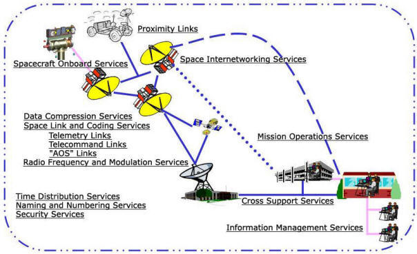
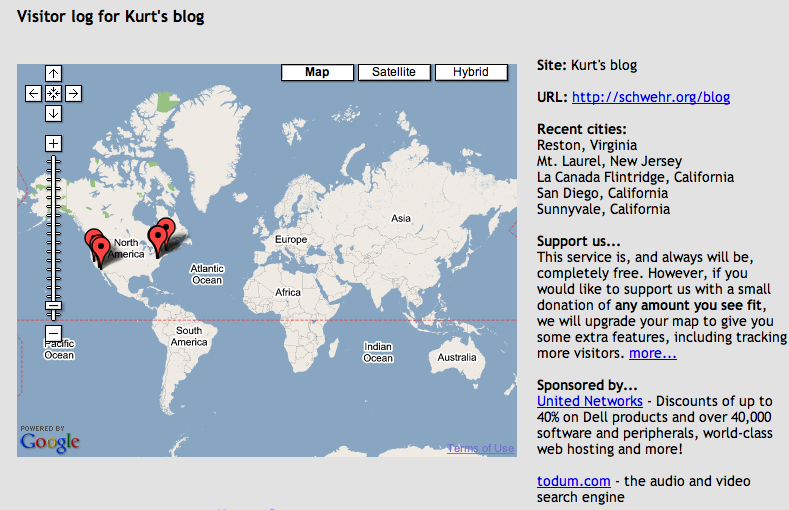
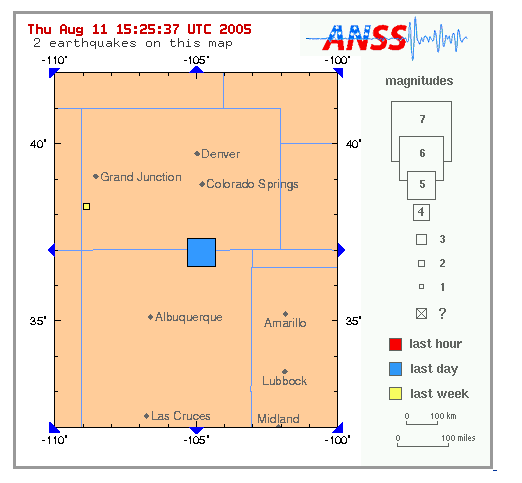

08.31.2005 21:12
segy-py 0.18
Probably nobody is paying any attention to segy-py, but I just put a
bunch of work into segysqlgmt.py. I still have not dealt with the UTM
Huntec files yet, but this gets me more flexibility working with the
databases while making gmt plots. From the ChangeLog:
Space.com on the Phoenix Mars Lander
Version 0.18 - 31 Aug 2005 * decimate.py: added preserve-begin and preserve-end options * segy.py: added verbosity * segydump.py: uses segy.py verbosity * segysql.py: added --warn-only for some types of bad segy files * segysqlgmt.py: --skip-line to avoid write points along each line * segysqlgmt.py: guess what --font-size does * segysqlgmt.py: --key allows lines to go off something other than shotpoint * segysqlgmt.py: --coord-unit to force any segy coord type number like arc sec * segysqlgmt.py: Dividing by 3600.0 is not totally hard coded any more * segysqlgmt.py: this file is getting ugly * segysqlgmt.py.help2man: added this file to start better documentation
Space.com on the Phoenix Mars Lander
08.31.2005 20:22
The joy/pain of removable disks
This evening, I accidentally removed a "UNIX File System" formatted
firewire drive from my mac without ejecting it. Ouch. Mac OSX did
not help the situation. When I plugged the drive back in, I saw
nothing and heard the drive grinding away. I was really worried. The
only thing in the logs said "Media not found 45 times." Yikes. I
killed the power so I could deal with it at home with more time to
work through things. At home, I plugged it back in and heard nothing.
I saw nothing in the DiskUtility app. I switched firewire ports and
the drive went crazy, but I still saw nothing. Then I did 'top -o cpu
-s 5' and there was good news. It was running our trusty friend fsck.
But why doesn't mac osx 10.3 pop up a message saying that it is
working on it?
And now, I see the drive icon back on my desktop. Hurray! Time to let the stress bleed away some. I forgot to bring home the power supply for the laptop.
Thank you fsck.
And now, I see the drive icon back on my desktop. Hurray! Time to let the stress bleed away some. I forgot to bring home the power supply for the laptop.
Thank you fsck.
08.31.2005 19:16
All known Idea Generation Methods
http://www.ideagenerationmethods.com/
About my Idea Generation Methods website By Martin Leith
This website lists and explains every idea generation method I've encountered during the past 15 years. It is the result of extensive research; my many sources include books, management journals, websites, academics, consultants and colleagues.
The methods have been drawn not just from the worlds of creative problem solving and innovation, but also from other worlds such as organisational change, strategic planning, psychotherapy, the new sciences and the creative arts.
The methods are listed below. Each is linked to a description, and in some cases you will find full instructions for using the method to generate ideas.
08.31.2005 11:36
Bear crossing
On the way into UNH this morning, we had to slow down to let a black
bear cross the road. That is a new one to us for commuting. This was
on 4 just before the light.
Me: "This is definitely going on my blog!"
Passenger: "You aren't kidding, are you?"
Me: "This is definitely going on my blog!"
Passenger: "You aren't kidding, are you?"
08.31.2005 08:27
AGU review format
I just submitted a paper to G-cubed. Here is how I
converted from a nice looking paper to the double spaced format for
review (which is definitely ugly). Before:
Also, landscape figures get converted back to portrait, so I had to shrink some figures. I left in the landscape tags, but had to add the width modifier to the includegraphics tag.
The files are available here: ftp://ftp.agu.org/journals/latex/... get agums.sty
\documentclass[agupp]{aguplus}
\usepackage{graphicx}
Now for review:
\documentclass[agums]{aguplus} % For review - double spaced
\usepackage{graphicx}
Also, landscape figures get converted back to portrait, so I had to shrink some figures. I left in the landscape tags, but had to add the width modifier to the includegraphics tag.
\begin{landscape}
\begin{figure}
\includegraphics[width=6in]{FiguresCores/Core4-AMS-water-v5} % FIX: only for draft
%\includegraphics{FiguresCores/Core4-AMS-water-v5}
\caption{Core 4 is blah blah blah}
\label{fig:core4}
\end{figure}
\end{landscape}
The files are available here: ftp://ftp.agu.org/journals/latex/... get agums.sty
08.31.2005 07:14
OPeNDAP/DODS, GNU SourceInstaller, New Orleans flooding
I thought I put this in my blog a couple months back, but I don't see it.
OPeNDAP/DODS and DAP (Data Access Protocol) client and server for Python.
State of Linux Graphics
UNIX source installations made easier with GNU Source Installer... Is this a good thing? This is not the FinkCommander app. Looks like basically what I see when I build an app by hand. with this gnu installer, you will still need exactly the same knowledge as with the CLI. I guess anything that gets people involved and learning is good.
Web Apps with Tiger: Security and MySQL
What is the solution for New Orleans in the future? The last time we were there, I saw news paper articles about a monster project to protect the area. The solution that they were trying to get was to place large concrete barriers that couple be lowered from the side of the highway between New Orleans and Slidel to keep the storm surge out of Lake Pontchartrain. I think that a storm big enough to need that would just rip the barrier/freeway right up. Something that is temporary is just not going to be strong enough.
What if Hurricane Ivan Had Not Missed New Orleans?
OPeNDAP/DODS and DAP (Data Access Protocol) client and server for Python.
OPeNDAP/DODS is a framework that simplifies all aspects of scientific data networking, making local data accessible to remote locations regardless of local storage format.
This Python module offers both a client and a server implementation. The client allows transparent and efficient access to datasets available on OPeNDAP/DODS server through the internet, using a syntax that follows very close the one used by Scientific Python to access NetCDF files.
The module also comes with three OPeNDAP/DODS servers: a CGI script, a Twisted-based server that accepts multiple connections, and a very simple server that only allows single connections (mostly used for testing purposes). All share the same architecture, and can be extended through plugins to serve different types of data.
State of Linux Graphics
UNIX source installations made easier with GNU Source Installer... Is this a good thing? This is not the FinkCommander app. Looks like basically what I see when I build an app by hand. with this gnu installer, you will still need exactly the same knowledge as with the CLI. I guess anything that gets people involved and learning is good.
Web Apps with Tiger: Security and MySQL
What is the solution for New Orleans in the future? The last time we were there, I saw news paper articles about a monster project to protect the area. The solution that they were trying to get was to place large concrete barriers that couple be lowered from the side of the highway between New Orleans and Slidel to keep the storm surge out of Lake Pontchartrain. I think that a storm big enough to need that would just rip the barrier/freeway right up. Something that is temporary is just not going to be strong enough.
What if Hurricane Ivan Had Not Missed New Orleans?
Author's Note: This column was originally intended to be the final disaster in the "Disasters Waiting to Happen" series. As I was developing the hypothetical situation depicting a devastating hurricane striking New Orleans, Louisiana, the disaster waiting to happen threatened to become a reality: Hurricane Ivan, a category 4 hurricane (with 140 mph winds) fluctuating to a category 5 (up to 155 mph winds), was slowly moving directly toward New Orleans. Forecasters were predicting a one-in-four chance that Ivan would remain on this direct path and would be an "extreme storm" at landfall. In reality, the storm veered to the north and made landfall east of Mobile Bay, Alabama, causing devastation and destruction well into the central Gulf shoreline and throughout the Southeast and the Mid-Atlantic states.
What if Ivan Had Hit New Orleans?
New Orleans was spared, this time, but had it not been, Hurricane Ivan would have:
Pushed a 17-foot storm surge into Lake Pontchartrain;
Caused the levees between the lake and the city to overtop and fill the city "bowl" with water from lake levee to river levee, in some places as deep as 20 feet;
Flooded the north shore suburbs of Lake Pontchartrain with waters pushing as much as seven miles inland; and
Inundated inhabited areas south of the Mississippi River.
Up to 80 percent of the structures in these flooded areas would have been severely damaged from wind and water. The potential for such extensive flooding and the resulting damage is the result of a levee system that is unable to keep up with the increasing flood threats from a rapidly eroding coastline and thus unable to protect the ever-subsiding landscape.
Evacuation Challenges
Researchers have estimated that prior to a "big one," approximately 700,000 residents of the greater New Orleans area (out of 1.2 million) would evacuate. In the case of Hurricane Ivan, officials estimate that up to 600,000 evacuated from metropolitan New Orleans between daybreak on Monday, September 13 and noon on Wednesday, September 15, when the storm turned and major roads finally started to clear.
To aid in the evacuation, transportation officials instituted contraflow evacuation for the first time in the area's history whereby both lanes of a 12-mile stretch of Interstate 10 were used to facilitate the significantly increased outbound flow of traffic toward the northwest and Baton Rouge. The distance of the contraflow was limited due to state police concerns about the need for staff to close the exits. And, although officials were initially pleased with the results, evacuees felt the short distance merely shifted the location of the major jams.
These feelings were justified by the amount of time it took residents to evacuate-up to 11 hours to go the distance usually traveled in less than 1.5. For many who evacuated into Texas, total evacuation time frequently exceeded 20 hours. Since the storm, a consensus has developed that to alleviate this congestion much more secondary highway coordination is necessary throughout the state, contraflow needs to be considered for much greater distances, residents who are able and willing to evacuate early must be doubly encouraged to do so, families with multiple cars need to be discouraged from taking more than one unless they are needed to accommodate evacuees, and all modes of transportation in their various configurations must be fully considered for the contributions they can make to a safe and effective evacuation.
The major challenge to evacuation is the extremely limited number of evacuation routes, which is the result of the same topography and hydrology responsible for the area's high level of hurricane risk. The presence of the Mississippi River, several lakes and bays, and associated marshes and swamps necessitates very expensive roadway construction techniques that are generally destructive to the environment, making the addition of more arteries increasingly challenging. This problem of limited evacuation routes also plagues the rest of the delta plain of southeast and south central Louisiana.
The fact that 600,000 residents evacuated means an equal number did not. Recent evacuation surveys show that two thirds of nonevacuees with the means to evacuate chose not to leave because they felt safe in their homes. Other nonevacuees with means relied on a cultural tradition of not leaving or were discouraged by negative experiences with past evacuations.
For those without means, the medically challenged, residents without personal transportation, and the homeless, evacuation requires significant assistance. The medically challenged often rely on life support equipment and are in such fragile states of health that they can only be moved short distances to medically equipped shelters. While a large storm-resistant structure with appropriate equipment has yet to be constructed or retrofitted, the Superdome was used to shelter nonevacuees during Ivan.
Residents who did not have personal transportation were unable to evacuate even if they wanted to. Approximately 120,000 residents (51,000 housing units x 2.4 persons/unit) do not have cars. A proposal made after the evacuation for Hurricane Georges to use public transit buses to assist in their evacuation out of the city was not implemented for Ivan. If Ivan had struck New Orleans directly it is estimated that 40-60,000 residents of the area would have perished.
Unwilling to merely accept this reality, emergency managers and representatives of nongovernmental disaster organizations, local universities, and faith based organizations have formed a working group to engage additional faith-based organizations in developing ride-sharing programs between congregation members with cars and those without. In the wake of Ivan's near miss, this faith-based initiative has become a catalyst in the movement to make evacuation assistance for marginalized groups (those without means of evacuation) a top priority for all levels of government.
To the Rescue
If a hurricane of a magnitude similar to Ivan does strike New Orleans, the challenges surrounding rescue efforts for those who have not evacuated will be different from other coastal areas. Rescue teams would have to don special breathing equipment to protect themselves from floodwaters contaminated with chemicals and toxins released from commercial sources within the city and the petrochemical plants that dot the river's edge. Additionally, tank cars carrying hazardous materials, which constantly pass through the city, would likely be damaged, leaking their contents into the floodwater and adding to the "brew." The floodwater could become so polluted that the Environmental Protection Agency might consider it to be hazardous waste and prohibit it from being pumped out of the leveed areas into the lake and marshes until treated.
Regional and national rescue resources would have to respond as rapidly as possible and would require augmentation by local private vessels (assuming some survived). And, even with this help, federal and state governments have estimated that it would take 10 days to rescue all those stranded within the city. No shelters within the city would be free of risk from rising water. Because of this threat, the American Red Cross will not open shelters in New Orleans during hurricanes greater than category 2; staffing them would put employees and volunteers at risk. For Ivan, only the Superdome was made available as a refuge of last resort for the medically challenged and the homeless.
The Aftermath
In this hypothetical storm scenario, it is estimated that it would take nine weeks to pump the water out of the city, and only then could assessments begin to determine what buildings were habitable or salvageable. Sewer, water, and the extensive forced drainage pumping systems would be damaged. National authorities would be scrambling to build tent cities to house the hundreds of thousands of refugees unable to return to their homes and without other relocation options. In the aftermath of such a disaster, New Orleans would be dramatically different, and likely extremely diminished, from what it is today. Unlike the posthurricane development surges that have occurred in coastal beach communities, the cost of rebuilding the city of New Orleans' dramatically damaged infrastructure would reduce the likelihood of a similar economic recovery. And, the unique culture of this American original that contributed jazz and so much more to the American culture would be lost.
Accepting the Reality
Should this disaster become a reality, it would undoubtedly be one of the greatest disasters, if not the greatest, to hit the United States, with estimated costs exceeding 100 billion dollars. According to the American Red Cross, such an event could be even more devastating than a major earthquake in California. Survivors would have to endure conditions never before experienced in a North American disaster.
Loss of the coastal marshes that dampened earlier storm surges puts the city at increasing risk to hurricanes. Eighty years of substantial river leveeing has prevented spring flood deposition of new layers of sediment into the marshes, and a similarly lengthy period of marsh excavation activities related to oil and gas exploration and transportation canals for the petrochemical industry have threatened marsh integrity. Sea level rise is expected to further accelerate the loss of these valuable coastal wetlands, the loss of which jeopardizes the fabric of Louisiana communities by threatening the harvesting of natural resources, an integral part of coastal culture. Concerted efforts by state and federal agencies are underway to develop appropriate restoration technologies and adequate funding to implement them.
The Future is Now
These solutions may not be able to overtake the speed of coastal loss. Strong storms not only threaten human lives, but also the physical coast itself. National hurricane experts predict more active and powerful hurricane seasons in the Atlantic basin for the next 10-40 years. The hurricane scenario for New Orleans that these converging risks portend is almost unimaginable. Hurricane Ivan had the potential to make the unthinkable a reality. Next time New Orleans may not be so fortunate.
Shirley Laska Center for Hazards Assessment, Response and Technology University of New Orleans
08.30.2005 20:08
tidy update for fink
I just created a new info file for tidy 050824. It seems to do the
trick.
../attachments/2005-08/tidy.info
../attachments/2005-08/tidy.info
08.30.2005 18:03
nb 3.2.3 troubles figured
I shoved a copy of the 2005-Aug-26 tidy and tab2space binaries into
/sw/bin and gave nanoblogger 3.2.3 another try. Worked right off.
tidy 20021210-2 is just a bit out of date.
08.30.2005 15:30
Graphics programs
BRL-CAD
GeoTools 2.1.0 - This is all Java GIS stuff.
BRL-CAD is a powerful constructive solid geometry solid modeling system that includes an interactive geometry editor, ray tracing support for rendering and geometric analysis, network distributed framebuffer support, image and signal-processing tools.Open CASCADE
Industrial Open Source alternative to proprietary 3D modeling kernels. Open CASCADE is a powerful CAD/CAM/CAE kernel and development platform for 3D modeling applications. It consists of reusable C++ object libraries and a set of development tools that are available in Open Source.ZS4 - the new incarnation of Zwei-Stein, is an advanced video editing and compositing program with over 100 built-in video effects.
GeoTools 2.1.0 - This is all Java GIS stuff.
08.30.2005 13:37
cvs add via python/find, grid bash
Automatic CVS
add - Interesting mostly because it combines find and python to do
cvs stuff AND the code snippets database that the snippet resides in.
pexpect looks like it might be great for wrapping command line applications.
From Geb Thomas: Journals Covered by Ergonomics Abstracts
Grid in action: Introduction to GridShell
From Geb Thomas: Journals Covered by Ergonomics Abstracts
Grid in action: Introduction to GridShell
08.30.2005 07:49
Reverting to nb 3.1
I posted about the Nanoblogger GUI in the last couple of days. I then saw an interesting review by B10[m|g]. He has good comments and the GUI does not solve the one major annoyance with writing nanoblogger posts: including pictures and other attachments is a pain. The GUI does not allow me to easily insert items to posts after I have written them in emacs.
Until I figure out the trouble with nanoblogger-3.2.3, I am going to revert to 3.1. Perhaps getting tidy to a much newer snapshot is the solution. Fink currently has a 2002 snapshot. Tidy is one of those projects that does not like to make a point release, so I will have to pick a nightly CVS snapshot to use.
Another observation is that even more problems with nanoblogger appeared when I tested without fink's /sw/bin in my path. There is another dependency that needs to be in the Depend line of the info file that I have not figured out. A guess would be fileutils, but it could also be one or more of diffutils, fileutils, findutils, textutils, or gawk.
Diving into the code for nanoblogger has been an interesting adventure, but I have to get back to the thesis!
FinkCommander is currently annoying me with a download new version popup... But I have the latest version. Grr.
08.29.2005 15:22
pltsegy manual on the web
The pltsegy
manual is now on the web.
How did nanoblogger work this morning? Now it totally seems messed up to me. Drat!
How did nanoblogger work this morning? Now it totally seems messed up to me. Drat!
08.29.2005 12:50
feeds are down
Looks like a rough morning...
Feeds are down for me with nanoblogger, even with TIDY_ARGS=" ". And it does not seem to pickup the new rsynced articles. Doh!! Maybe I really have to start building the web pages on my laptop and syncing those too. I like not sucking my batteries, but may have to.
I am also having trouble with segy-py reading some USGS Huntec seismic data:
I am getting a fun error with pltsegy:
Adium won't do IRC. Arg.
Feeds are down for me with nanoblogger, even with TIDY_ARGS=" ". And it does not seem to pickup the new rsynced articles. Doh!! Maybe I really have to start building the web pages on my laptop and syncing those too. I like not sucking my batteries, but may have to.
I am also having trouble with segy-py reading some USGS Huntec seismic data:
segysql.py -v -v -v -v -D line45.sgy
FILENAME: line45.sgy
fileKey = 1
WARNING: seems you have variable length traces that will not be handled!!!
Traceback (most recent call last):
File "/Users/schwehr/x/src/segy-py/segysql.py", line 120, in ?
for i in range(1,xstar.getNumberOfTraces()+1):
File "/Users/schwehr/projects/xcore/src/segy-py/segy.py", line 237, in getNumberOfTraces
assert(False)
AssertionError
I am sure that this is not a big deal.
I am getting a fun error with pltsegy:
Data file: ieee.segy Sort file: sort.default.pltsegy.sort Data format 5 rgmax = rgmin : x scale not definedHere is the man page on rgmin/max:
rgmin (r), rgmax (r) -
minimum/maximum range of plot. In general the minimum
and maximum ranges will be determined from the ranges
of the traces to be plotted. However, it is possible
to plot only travel time curves in which case dtfile
is not specified and rgmin, rgmax must be used to
specify ranges on a plot. rgmin/rgmax are ignored if
a dtfile is given.
Fun all around.
Adium won't do IRC. Arg.
08.29.2005 12:09
nb 3.2.3 in fink
I have updated nanoblogger to 3.2.3 in fink and am now using it for my
server. I copied back in the old archive by month so that old links
should not break.
08.29.2005 08:07
nanoblogger tidy fix
I added a perl one liner to the info file, so hopefully that will fix
things up.
Hi Kurt.Foggy, foggy morning. I can just barely see the draw bridge.
This seems to be a common issue caused by tidy or by the tidy.sh plugin command line arguments in mac osx. I never investigated it fully, but as a workaround you can disable most of the command line args in tidy.sh by setting TIDY_ARGS=" " (blank space).
Kevin
08.29.2005 06:33
python searching, nb 3.2.3
I am still working on nanoblogger 3.2.3. I have it installed on my laptop and can write posts, but it does not generate html files or feeds. My server still has 3.1, so when I rsync the latest, the server can still make the web pages.
magpy [freshmeat.net] This looks very interesting. I never got up to speed on swish-e.
magpy is a Python wrapper for the mg full-text search engine, which has support for fast full-text indexing/retrieval and ranked/boolean queries.
New Orleans Web Cams

RIAA Vrs The People blog.
Messenger spacecraft movie of the Earth
08.28.2005 18:48
New Orleans - Hurricane Katrina
We are thinking of all those we know in New Orleans and hoping are
able to ride the storm in safety.
O'Reilly has a weblog with links for Hurricane Katrina
O'Reilly has a weblog with links for Hurricane Katrina
08.28.2005 17:28
JabRef - BibTeX editor
jabref is a java app:
Become a Photoshop Expert
25 SQL Commandments - These hints--many of them previously unpublished--can help you avoid the plague of poorly written SQL statements By Suresh Aiyer
JabRef is a graphical frontend to manage BibTeX databases, the standard LaTeX bibliography reference format. JabRef is build to be platform independant (requires Java 1.4.2 or newer). It merges and extends the functionalities of BibKeeper (Morten O. Alver) and JBibtexManager (Nizar Batada).
Become a Photoshop Expert
25 SQL Commandments - These hints--many of them previously unpublished--can help you avoid the plague of poorly written SQL statements By Suresh Aiyer
08.28.2005 13:33
A post from within the Nanoblogger GUI Frontend
I am giving the JAVA Nanoblogger frontend a try. It may mess up the
database since I am not up to the latest nb version. Also, it forces
a catagory, while I had none before for most of my posts.
The list of articles is nice.
Crossing my fingers...
UPDATE: It mostly worked, but since I didn't set it up to handle the ask about previewing question, the GUI got hung on that. Nice and simple interface, plus it popped up emacs for me to write with. This is something that I have been thinking about for a while. Nice to see someone beat me to it. Just wish that I could kill the processes that it was running.
The list of articles is nice.
Crossing my fingers...
UPDATE: It mostly worked, but since I didn't set it up to handle the ask about previewing question, the GUI got hung on that. Nice and simple interface, plus it popped up emacs for me to write with. This is something that I have been thinking about for a while. Nice to see someone beat me to it. Just wish that I could kill the processes that it was running.
08.28.2005 12:37
Converting IBM floating point segy to IEEE float
I now have a little script that converts IBM floating point SEGY data
to IEEE floating point using sioseis:
The segy-py programs can't currently read IBM floating point, so this lets me use those tools.
#!/bin/bashofmt 5 is IEEE floating point, while 1 would be IBM floating point.
fileIn=$1 fileOut=$2
sioseis <<EOF procs diskin diskoa end diskin lno 99999 ipath $fileIn end end diskoa opath $fileOut ofmt 5 end end end EOF
The segy-py programs can't currently read IBM floating point, so this lets me use those tools.
08.28.2005 11:21
nanoblogger GUI
Nanoblogger GUI 0.9 via
Java Webstart
Also, I just created a feedburner.com feed for my blog just to see what it is about: http://feeds.feedburner.com/kurt
Also, I just created a feedburner.com feed for my blog just to see what it is about: http://feeds.feedburner.com/kurt
08.28.2005 08:19
bash booleans
In my older bash scripts I used an == comparison to wrap blocks in a
conditional if block that I could turn on or off. Just now I found
out that there is a better way to do this! true and false are a part
of the bash language. When did this happen? This is great!!!
My old may:
My old may:
#!/bin/bash if [ 0 == 1 ]; then echo This does not get run fi if [ 0 == 0 ]; then echo This DOES RUN! fiThat was pretty ugly. Now I can do this:
#!/bin/bash if [ false ]; then echo This does not get run fi if [ true ]; then echo This DOES RUN! fiThis should be much easier for people to understand right off and less twisted than seeing large blocks of commented code. Bash just keeps getting better. Yes, I do know that perl, python, etc are way better for most of these tasks. Calling lots of binaries through system calls in these languages is just not very fun.
08.27.2005 12:00
gmt 4.0 bug
These are not valid arguments, but it should complain, not give a bus
error.
# grd2cpt -L-800/0 Bus error
08.27.2005 10:30
segy-py 0.17
I just released segy-py version 0.17.
This version adds decimate.py for chopping down text files by
alternating deleting and saving blocks of lines. The default is to
kill every other line.
segy-py-0.17.tar.bz2
segy-py-0.17.tar.bz2
08.26.2005 07:12
Almost switched to Firefox
Just a minute ago, I almost switched from Safari to Firefox. Why? I
read When
Emacs and The Browser converge [lesscode.org] and read through the
extensions that he has been playing with using Greasemonkey.
I mentioned seashore before, but it made it up on an RSS feed this morning:
Software Factories - HMMM...
HyperPhysics
Busy morning on the water. The Alexandria is coming in to the pier to the west of us and another large ship headed out to sea an hour ago.
SourcePlease removes some of the insanity of SourceForge file listings by linking directly to a specific mirror's copy of a file, removing the need to wade through five pages of ads.The fact that Firefox is so configurable is very enticing. If I didn't have all of my cookies and such sitting in Firefox, I just might take the plunge. I really dislike being so dependent on platform specific tools.
I mentioned seashore before, but it made it up on an RSS feed this morning:
Seashore is an open source image editor for Cocoa. It features gradients, textures and anti-aliasing for both text and brush strokes. It supports multiple layers and alpha channel editing. It is based around the GIMP's technology and uses the same native file format.
Software Factories - HMMM...
HyperPhysics
Busy morning on the water. The Alexandria is coming in to the pier to the west of us and another large ship headed out to sea an hour ago.
08.25.2005 22:00
EAS Transmission
"EAS transmission"
THIS CABLE SYSTEM IS CONDUCTING A REQUIRED TEST OF THE EAS SYSTEM
08.25.2005 18:40
Battling anemones
Anemone Armies Battle to a Standoff
When the tide is out, the polyps are contracted and quiet. As the tide covers the colonies, "scouts" move out into the border to look for empty space to occupy. Larger, well-armed "warriors" inflate their stinging arms and swing them around. Towards the center of the colony, poorly armed "reproductive" anemones stay out of the fray and conduct the clone's business of breeding.Python easy-deb - Would be cool to make something for fink like this. But where are the files?
08.25.2005 16:24
NorthAmerican movers - trouble with a claim
We are working on our insurance claim with North American. Two days
ago, they said that they had the claim and were contacting the driver
and agents. Today, they said they have no record of us submitting a
claim. I have a pdf confirmation of the claim sitting right infront
of me. The driver was supposed to contact us 2 weeks ago, but
nothing.
I hope to be able to write a favorable review of North American when this is all settled, but I can't do that just yet.
I hope to be able to write a favorable review of North American when this is all settled, but I can't do that just yet.
08.25.2005 13:08
In the cool technology to exploit department
I need to check these things in python as they sound like they would
be great stuff to have in my toolchest!
- http://plone.org/
- SOAPpy and ZSI
- twisted (which I wrote the original fink info file for)
08.25.2005 10:39
Deep sea pictures
Explore the Abyss is currently down after being posted on digg. Update: seems to be back up.
Python GeoTypes:
coconutBattery - Doh! Only for OSX 10.4
Python GeoTypes:
GeoTypes is a Python library that implements both the OpenGIS/PostGIS and standard PostgreSQL geometry types. It integrates with the psycopg Python/PostgreSQL interface. It provides implementations of all of the OpenGIS/PostGIS classes, except (x,y,m) and (x,y,z,m). It currently supports the EWKB, HEXEWKB, WKB, and WKT formats.
coconutBattery - Doh! Only for OSX 10.4
08.24.2005 17:41
mesh merging
Finally I was able to splice multiple meshes together. Thanks to Becca, Anthony and Val for help. Here is basically what I did. I started with 3 grd files at different resolutions. For each one upsample it by doing grdsample to a common resultion (the highest of the batch). Do a grdinfo on each to make sure that the resolutions are really the same. I had to tweak the region of one grid to remove a rounding error that stopped gmt from merging. The run grdblend (after you have patched GMT 4.0) to get one large grd at the higher resolution.
My blend file:
cat blend.file2
mbari-1c.grd -R-124.83333/-124.5/40.75/41 10 eureka.grd -R-124.6/-124.1/40.7/41 5 3sec.grd -R-125.5/-123/39/42 1
Build the 1 second mesh that has the MBARI, Strataform and 3sec coastal relief(check out the ugly contours).
export R=-125/-124/40.5/41 grdblend blend.file2 -Geel-combined.grd -R$R -I1c
I will leave you with a pretty picture:
08.24.2005 16:23
GMT grdblend bug
Thanks to Anthony Koppers for pointing me to this info.
It seems that there was a bug with gmt_grdio.c that prevented row-by-row reading of grid files from setting the scale and offset correctly. I found the patch on this page dated 2004-10-10:
GMT 4 Errata
Update: It worked.
I modified the fink gmt.patch file for OSX 10.3. You can replace /sw/fink/10.3/unstable/main/finkinfo/sci/gmt.patch if you are desparate, but you probably want to wait for fink to pick it up. I will submit it to the maintainer.
gmt.patch
It seems that there was a bug with gmt_grdio.c that prevented row-by-row reading of grid files from setting the scale and offset correctly. I found the patch on this page dated 2004-10-10:
GMT 4 Errata
2004-10-10 gmt_grdio.c PATCH Subroutine opening grdfile for row-by-row reading (for grdblend.c) failed to initialize scale/offset.Now to figure out how to get that patch into the fink build of gmt...
Update: It worked.
cat blend.file2 mbari-1c.grd -R-124.83333/-124.5/40.75/41 3 eureka.grd -R-124.6/-124.1/40.7/41 2 3sec.grd -R-125.5/-123/39/42 1
grdblend blend.file2 -Gfoo.grd -R-124.6/-124.1/40.7/41 -I1c
grdinfo foo.grd foo.grd: Title: foo.grd: Command: grdblend blend.file2 -Gfoo.grd -R-124.6/-124.1/40.7/41 -I1c foo.grd: Remark: foo.grd: Normal node registration used foo.grd: grdfile format # 0 foo.grd: x_min: -124.6 x_max: -124.1 x_inc: 0.000277778 units: user_x_unit nx: 1801 foo.grd: y_min: 40.7 y_max: 41 y_inc: 0.000277778 units: user_y_unit ny: 1081 foo.grd: z_min: -750.13 z_max: 242.963 units: user_z_unit foo.grd: scale_factor: 1 add_offset: 0
I modified the fink gmt.patch file for OSX 10.3. You can replace /sw/fink/10.3/unstable/main/finkinfo/sci/gmt.patch if you are desparate, but you probably want to wait for fink to pick it up. I will submit it to the maintainer.
gmt.patch
08.24.2005 12:56
attempting and failing to merge grids
I have been trying to merge meshes and keep getting knocked down. It
seems like there are many paths to the goal, but nothing I try quite
gets me there. I just sent this message to the mbsystem mailing list
asking for help.
Here are some notes about what I did that are a little bit scattered...
The script:
My datalist file looks like this for ascii lon/lat/depth data:
Warning... incoming blather. This includes the blockmean and nearest neighbor stuff that I tried from Nathan's tutorial.
There are a couple of questions burried below...Maybe I'll go back and try the Nathan Becker method again and see if I can figure what I goofed up on.
I am having a bit of trouble merging some higher resolution grids with a lower res 3sec coastal relief dataset. Maybe some on here can point me in the right direction.
* I have been trying to merge the two better grids as xyz with mbm_grid. The first question is that mb_grid seems to ignore -E.0002 or -E1c for grid cell size by always making 100x100 grids, but -D4000/1800 seems to make a bigger grid. What is a proper -E option?
* When I used -Klarge.grd with mb_grid I get a silent seg fault with no indication of what died, where or why. I did a grdcut to my local region and that went away. I presume this just a memory allocation exceeded? So I just need to do grdcuts in my scripts?
e.g. NaN values used to flag regions with no data MBIO parameters: Ping averaging: 1 Longitude flipping: 0 Speed minimum: 0.0 km/hr 1753756 data points processed in Orig/Eureka.xyz 6145312 data points processed in Orig/mbari.eela.xyz
Extracting background from grid file coastal-relief-3sec.grd... Segmentation fault All done!
* This last one is probably a bug with how I packaged mbsystem in fink. Any suggestion for how to get mbsystem to find grdraster.info?
Speed minimum: 0.0 km/hr 1753756 data points processed in Orig/Eureka.xyz 6145312 data points processed in Orig/mbari.eela.xyz
Extracting background from grdraster dataset 3... grdraster: ERROR cannot open r /sw/share/dbase/grdraster.info grdraster: ERROR reading grdraster.info file. grdinfo: File tmpgrdraster18266.grd not found grdsample: No such file or directory [tmpgrdraster18266.grd] grd2xyz: No such file or directory [tmpgrdsample18266.grd] rm: tmpgrd*18266.grd: No such file or directory
When I go looking for grdraster, it is in /sw/share/gmt/dbase, which is what is required of fink packages, so I am not allowed to modify the gmt install. I tried setting export GMT_GRIDDIR=/sw/share/gmt/dbase/ but having no luck. Then I get this error message:
grdraster ERROR opening /sw/share/gmt/dbase//haxby5m_faa.i2 for read. grdinfo: File tmpgrdraster18294.grd not found grdsample: No such file or directory [tmpgrdraster18294.grd] grd2xyz: No such file or directory [tmpgrdsample18294.grd]
I am not turning up anything with haxby on my system.
* Lastly, if anyone can suggest good tutorials on bringing together different resoluion data, I would really appreciate it. I started with Nathan Becker's word document, but seem to be getting tripped up on... that's why I gave mbsystem a try.
Here are some notes about what I did that are a little bit scattered...
The script:
#! /bin/csh -f
set REGION = -125/-124/40:30/41:00 set INPUT_FILE = datalist.dst set INPUT_FORMAT = -1 set ROOT = datalist.dst
mbgrid -I$INPUT_FILE \ -R$REGION \ -O$ROOT \ -A1 -N \ -K3sec.grd \ -D4000/1800
# -Kcoastal-relief-3sec.grd \ # -E0.0002 \ echo All done!
My datalist file looks like this for ascii lon/lat/depth data:
% cat datalist.dst
Orig/Eureka.xyz 162 10 Orig/mbari.eela.xyz 162 5
Warning... incoming blather. This includes the blockmean and nearest neighbor stuff that I tried from Nathan's tutorial.
awk '{print $1,$2}' eel-strange-block.xyz > block.xy
521 bzcat 3sec-sub.txt.bz2 | awk '{print $1,$2,$3,.4}' |gmtconvert -bo > 3sec.xyzw.bin
530 bzcat Orig/Eureka.xyz.bz2 | awk '{print $1,$2,$3,.8}' |gmtconvert -bo > eureka.xyzw.bin
531 bzcat Orig/mbari.eela.xyz.bz2 | awk '{print $1,$2,$3,.8}' |gmtconvert -bo > mbari.xyzw.bin
537 less mbari.xyzw.bin
544 blockmean -bi -W {3sec,eureka,mbar}.xyzw.bin -R$R -I1c -bo > all.blockmean.xyzw.bin
545 blockmean -bi -W {3sec,eureka,mbari}.xyzw.bin -R$R -I1c -bo > all.blockmean.xyzw.bin
549 blockmean -bi -W {3sec,eureka,mbari}.xyzw.bin -R$R -I1c -bo > all.blockmean.xyzw.bin
551 nearneighbor -bi all.blockmean.xyzw.bin -R$R -I1c -N4 -S4c -Gall.nearneighbor.grd
552 man mbdatalist
576 mbm_grid -Idatalist.dst -R$R -E1c -Kcoastal-relief-3sec.grd
604 grdcut coastal-relief-3sec.grd -G3sec.grd -R$R -V -fg
08.24.2005 12:08
swap - Ship to Ship, Ship to Shore, Wireless Access Protocol
The only thing missing in that title is shore to shore 
Val Schmidt pointed me to the swap web page:
Val Schmidt pointed me to the swap web page:
SWAP is a collaborative project to provide a working set of hardware, software and networking configurations to facilitate ad-hoc mesh networking between ships, and between ships and shore facilities, within the UNOLS oceanographic research fleet. SWAP is also being developed to facilitate connections between other kinds of nodes, including instrumented buoys, light houses and cabled observatories.I am very interested in comparing the concepts of spacecraft communication (e.g. see my earlier post about CCSDS) with those used in the SWAP project. I never did get around to writing that paper with Mark Sibenac that the two of us discussed when I was at CMU. My first question about SWAP is how would this integrate with underwater assets (e.g. AUVs or moorings)? The second question is why didn't I stumble onto this on my own?
08.24.2005 10:56
CoreWall
Check out the CoreWall at
Electronic Visualization Lab, University of Illinois at Chicago. I
checked out this thing at AGU and it is really amazing.
08.24.2005 10:42
W9605B Eel Seismic data at UTexas
I got a very quick response back from folks at UTexas Marine Geoscience
Data Management System, Processed Seimic Data Center about the Eel
W9605 data sample format issue:
UPDATE: Looks like things should be good to go! Many thanks to Lisa and Tom at UTexas.
Almost certainly it is 32 bit floating point IEEE, which was not a 'standard' SEGY rev. 0 format back when these data were processed.They are looking into it further, but that is enough for me. I may add a command line option to force the sample type and see if the traces look sane. I still have not integrated code to read the IBM floating point data that are in the other files.
UPDATE: Looks like things should be good to go! Many thanks to Lisa and Tom at UTexas.
I went through the segy files for W9605B and made a list of the ones with Format=6. We ran a SIOSEIS script which changed it to 5. The modified files are now available through the website. At the end of this e-mail is the list that I came up with.
Cheers, Lisa
ar54.4173.w9605b.eel003.migration.segy ar54.4176.w9605b.eel007.migration.segy ar54.4178.w9605b.eel010.migration.segy ar54.4180.w9605b.eel011.migration.segy ar54.4181.w9605b.eel014.migration.segy ar54.4183.w9605b.eel014.migration.segy ar54.4185.w9605b.eel015.migration.segy ar54.4186.w9605b.eel018.migration.segy ar54.4188.w9605b.eel018.migration.segy ar54.4190.w9605b.eel019.migration.segy ar54.4192.w9605b.eel022.migration.segy ar54.4194.w9605b.eel023.migration.segy ar54.4196.w9605b.eel027.migration.segy ar54.4198.w9605b.eel027.migration.segy ar54.4199.w9605b.eel028.migration.segy ar54.4202.w9605b.eel031.migration.segy ar54.4204.w9605b.eel035.migration.segy ar54.4207.w9605b.eel039.migration.segy ar54.4210.w9605b.eel042.migration.segy ar54.4212.w9605b.eel043.migration.segy ar54.4215.w9605b.eel045.migration.segy ar54.4217.w9605b.eel046.migration.segy ar54.4219.w9605b.eel046.migration.segy ar54.4220.w9605b.eel050.migration.segy ar54.4223.w9605b.eel051.migration.segy ar54.4225.w9605b.eel053.migration.segy ar54.4227.w9605b.eel054.migration.segy ar54.4229.w9605b.eel058.migration.segy ar54.4231.w9605b.eel059.migration.segy ar54.4233.w9605b.eel062.migration.segy ar54.4235.w9605b.eel063.migration.segy ar54.4237.w9605b.eel063.migration.segy ar54.4239.w9605b.eel066.migration.segy ar54.4241.w9605b.eel067.migration.segy ar54.4243.w9605b.eel068.migration.segy ar54.4245.w9605b.eel070.migration.segy ar54.4247.w9605b.eel071.migration.segy ar54.4249.w9605b.eel075.migration.segy ar54.4251.w9605b.eel075.migration.segy ar54.4253.w9605b.eel079.migration.segy ar54.4255.w9605b.eel083.migration.segy ar54.4257.w9605b.eel087.migration.segy ar54.4258.w9605b.eel091.migration.segy ar54.4261.w9605b.eel095.migration.segy ar54.4263.w9605b.eel099.migration.segy ar54.4265.w9605b.eel103.migration.segy ar54.4267.w9605b.eel107.migration.segy ar54.4269.w9605b.eel111.migration.segy
08.24.2005 09:38
watch is in fink
Just discoved that the cool procps linux program called watch
is now in fink! I don't know when Ben Reed added it, but after Aurelio showed me how to use it on MER, I was hooked. Try something like this with it:
In window 1: cd ~/Desktop watch -n 10 -d ls -l In window 2: cd ~/Desktop touch foo; sleep 11; touch bar; sleep 11; rm -f foo barWatch just runs a command at a certain frequency and has the option to highlight changes in the output.
08.24.2005 08:27
Spacecraft communications - CCSDS and CFDP
I thought all NASA Space Craft already used CCSDS for the communications
protocol, so I was confused when I saw this article. NASA's MESSENGER Sends Flyby
Data to Earth Using CCSDS File Delivery Protocol Developed for Deep
Space by International Team
These file specification organizations really need to make sample data streams more available. Maybe things like this could be used for underwater AUV communications or other types of platforms if there was a good (and open) reference implementation. Or maybe it is just too much trouble.
Random: Tagging Mail.app mail on OSX
Now back to working on merging disparate multibeam data sources.
... Prior to MESSENGER, JHU/APL missions used a raw storage model of storing data, but new mission and operational requirements meant that MESSENGER would have to incorporate a file system of data storage into its spacecraft software architecture. A reliable method of downlinking files to the ground had to be found and CFDP was chosen by mission planners to get the job done. ... CFDP allows an instrument to record an observation in a file and transmit the file to Earth without having to consider whether or not physical transmission is possible at that time. Sequestering outbound data management and transmission planning functions within CFDP can simplify flight and ground software, which reduces mission costs - an important benefit to lower cost missions like MESSENGER. ...I never really dug into the CCSDS very far on any of the missions that I worked on. I have a few CCSDS files on CD somewhere from the Mars Polar Lander testbed, but I only knew the command line to get what I needed out of them. I was thinking it would be great to start an open source CCSDS parsing library that anyone could use, but have never had enough motivation to get started. It sounds like the File Delivery Protocol(CFDP) is something new, but that really is not clear. I have avoided understanding the details of the DSN world and have had enough work to do handling the files once they come out of CCSDS (usually via the flight line file system or JPL/MIPL's FEI - File Exchange Interface)
These file specification organizations really need to make sample data streams more available. Maybe things like this could be used for underwater AUV communications or other types of platforms if there was a good (and open) reference implementation. Or maybe it is just too much trouble.

Random: Tagging Mail.app mail on OSX
Now back to working on merging disparate multibeam data sources.
08.23.2005 07:53
rest2web and geoblogs
I am starting to thing the rest2web might be a cool thing to play
with. I have seen quite a few blog entries about it, but I did not
take notice until I spent two minutes looking at docutils. Of course,
it is python based.
Google says:
Your search - "spatial notebook" - did not match any documents.
On the other hand:
Results 1 - 4 of about 17 English pages for "spatial blog"
Blogdigger
This sounds like someone has been reading Neal Stephenson: (High Revenue Mobile Services Based on Location Messaging
GeoBlog = Flickr + Google Map which points to http://www.geobloggers.com/... the site does not seem to be too speedy.
Google says:
Your search - "spatial notebook" - did not match any documents.
On the other hand:
Results 1 - 4 of about 17 English pages for "spatial blog"
Blogdigger
Even wonder what people have written about an area?
The Blogdigger cognoscenti have added native Google Earth publishing to their spatial blog search capabilities. (Fast work!) Visit Blogdigger, click on Local, specify your search (what, where, click), and then notice the box to the right, and the link at the bottom reading, "See it in Google Earth." Guess what that does? Now click on one of the icons.
This sounds like someone has been reading Neal Stephenson: (High Revenue Mobile Services Based on Location Messaging
The key to all of this is Location Messaging: a symmetric messaging technology where every user is both a content provider and a content user. Every message, whether by email or by SMS, has a location tag that associates it with a place.google geoblog: Results 1 - 10 of about 30,600 English pages for geoblog.
GeoBlog = Flickr + Google Map which points to http://www.geobloggers.com/... the site does not seem to be too speedy.
08.22.2005 22:29
Beastie Boys and Wicked Lasers
Wicked Lasers
pointers that do damage. We need these strong enough to cut core
liner.
Beatsie Boys a cappella download page - Get you free Beastie boys here.
Beatsie Boys a cappella download page - Get you free Beastie boys here.
08.22.2005 15:42
segy troubles with the Eel UTexas data
Arg! I hit control C at the wrong time and lost the blog entry. Try
number 2. Much safer to great a short entry and get it saved. Then I
do an "nb -e 1" to write the content. Sigh.
I have a bunch of files in the UTexas Eel seismic survey that have been giving me some troubles. segydump.py and segysql.py were both hitting an exception within the getTraceSize code. I can see the first trace, but any higher freaks out when it tries to calculate the offset to the start of that trace.
No ground hog sightings out the office window in the last week. Where is that fat sucker?
I have a bunch of files in the UTexas Eel seismic survey that have been giving me some troubles. segydump.py and segysql.py were both hitting an exception within the getTraceSize code. I can see the first trace, but any higher freaks out when it tries to calculate the offset to the start of that trace.
segydump -t 1 ar54.4178.w9605b.eel010.migration.segyI marked the troublesome SampleFormat lines above. Type 6 is listed as not used in both the Rev 0 and Rev 1 specifications. I looked in the text header and nothing there too.
filename="ar54.4178.w9605b.eel010.migration.segy"
# FILE HEADER CorrelatedTraces=0 TraceSorting=4 SweepTaperLenStart=0 SweepLen=0 MeasurementSystem=1 SampleFormat=6 SweepTaperLenEnd=0 JobId=0 SegYRev=0 LineNo=10 TracesPerEnsemble=0 SweepType=0 SamplesPerTrace=4200 TaperType=0 VibPolarity=0 BinGainRecovered=0 AmpRecovMeth=0 OrigSampleInterval=500 FixedLenTraceFlag=0 EnsembleFold=0 ImpulsePolarity=0 ReelNo=0 VerticalSum=0 NumExtendedTextHeaders=0 TraceSweepChannel=0 SweepStart=0 OrigSamplesPerTrace=0 SweepEnd=0 SampleInterval=500 AuxTracesPerEnsemble=0 SweepType= Unknown value - '0' TraceSorting='Horizontally stacked' SampleFormat='Not currently used' 1: SweepFreqStart=0 1: InstrInitGain=0 1: RecvGrpElev=0 1: SweepLen=0 1: OverTravel=0 1: GapSize=0 1: SrcEDirTenths=0 1: LowCutFreq=0 1: ShotpointScaler=0 1: ElevRcvGrp=0 1: Day=206 1: MuteStart=0 1: TraceSamples=4200 1: InstrGainConst=0 1: AliasFiltFreq=0 1: X=0 1: SrcDepth=0 1: SubWxVel=0 1: SrcMeasExp=0 1: Yensemble=0 1: TransdConstMant=0 1: HorzStackedNo=0 1: LineSeqNo=0 1: GrpY=0 1: GrpX=0 1: TimeScaler=0 1: Unassigned233=4294967296 1: TimeBasis=0 1: TraceNoEnsemble=1 1: FieldRecNo=1 1: HighCutSlope=0 1: DataUse=1 1: HighCutFreq=0 1: SweepType=0 1: TaperType=0 1: SrcMeasMantisa=0 1: Hour=22 1: GrpCorr=0 1: PostInLineNo=0 1: TotStatic=0 1: SrcEDir=0 1: DistanceCenter=0 1: WaterDepthSrc=0 1: SweepFreqEnd=0 1: SampleInterval=500 1: TraceWeight=0 1: SrcMeasUnits=0 1: TransdConstExp=0 1: GeopGrpTr1=0 1: TraceNo=1 1: Min=28 1: ESrcPtNo=0 1: SweepTaperLenEnd=0 1: GainType=0 1: UpholeTSrc=0 1: WxVel=0 1: AliasFiltSlope=0 1: LagTA=0 1: Correlated=0 1: FileSeqNo=1 1: PostCrossLineNo=0 1: LowCutSlope=0 1: TransdUnits=0 1: UpholeTGrp=0 1: GeopGrpRlSw1=0 1: Sec=0 1: TraceUnits=0 1: WaterDepthGrp=0 1: SweepTaperLenStart=0 1: Delay=0 1: LagTB=0 1: Xensemble=0 1: SurfElevSrc=0 1: SrcTypeOrient=0 1: ElevSrc=0 1: EnsembleNo=200 1: DevTrId=0 1: TraceId=1 1: NotchFiltFreq=0 1: GeopGrpNoLstTr=0 1: Y=0 1: SrcCorr=0 1: MuteEnd=0 1: ScalerCoord=-1000 1: CoordUnits=2 1: NotchFiltSlope=0 1: ScalerElevDepth=0 1: Shotpoint=0 1: Year=1996 1: VertSumNo=0 1: CoordUnits_ascii='Seconds of arc' 1: TraceId_ascii='Seismic data' 1: TransdUnits_ascii='Unknown' 1: SrcTypeOrient_ascii='Unknown' 1: DataUse_ascii='Production' 1: SrcMeasUnits_ascii='Unknown' 1: OverTravel_ascii='__UNKOWN__' 1: GainType_ascii='__UNKOWN__' 1: SweepType_ascii='__UNKOWN__' 1: TimeBasis_ascii='__UNKOWN__' 1: TaperType_ascii='__UNKOWN__' 1: TraceUnits_ascii='Unknown'
SEG-Y ASCII HEADER 39 LINES **********************************************
************************ INPUT STREAM STARTED FROM DISK FILE: /home/mcspad
/spad/data/w9605b/seismic_segy/10.v.1.stolt LINE NUMBER FORCED TO 10
ACQUISTION YEAR FORCED TO 1996 ************************
********************************************** **********************************************************************
INPUT SAMPLE INTERVAL is 500 MICROSECONDS INPUT STREAM MODIFIED AS FOLLOWS:
CDP TRACES USED 0001 THROUGH 0001
MAX TAPE SECS= 3 MAX STAR MSECS= 3000 1ST MSECS TO USE= 0 MAX MSECS TO USE=
3000 PROGRAM: S
TAR 11/15/00 12:17:53 DIRECTORY: /home/mcsusers/w9605b
USER: jp PARAMETER FILE om.stk.cop
y VELOCITY FILE: /data/mcsdb/vels/ih/w9605b/10.v.1
0 DIFFERENT VELOCITIES. SEE NMO FOR VELOCITY CHANGES FIRST CDP 200, LAST CDP 4189, TO
TAL CDPS 24, # OF LAYERS 40 LINE 10 SAMPLE INTERVAL 500 MICROSECONDS OUTPUT AL
L TRACES USED OUTPUT STREAM TO DISK FILE:
/home/mcspad/ldata/w9605b/stolt/10.v.1.stolt ****************
****************************************************** INPUT STREAM STARTED FROM DISK FILE:
/data/mcs/w9605b/stolt/10.v.1.stolt ACQUISTION YEAR FORCED TO 1
996 INPUT SAMPLE INTERVAL IS 500 MICROSECONDS
PROGRAM: TAPECOPY 11/16/00 10:26:29 OUTPUT SAMPLE INTERVAL IS 500 MICROSE
CONDS ALL TRACES USED ACQUI
STION YEAR FORCED TO 1996 INPUT SAMPLE INTERVAL IS 500 MICROSECONDS
PROGRAM: TAPECOPY 11/16/00 10:40:09 OUTPUT SAMPLE INT
ERVAL IS 500 MICROSECONDS ALL TRACES USED
OUTPUT STREAM TO DISK FILE: /data/mstore/ldeo/users/mcsdat
a/w9605b/10.v.1.stolt
I put a try statement into segy.py to default to 4 bytes per sample if
it finds nothing valid. That seems to work since I am now able to get
(mostly) valid latitude and longitude values for each trace. The
files start off with 0,0 location samples for a bit and then get
settled. There is also a new twist (for me at least) that I have to
use the scale factor setting (marked in bold above). Here is the
sqlite command line to get valid lon lat pairs:
sqlite eel-utexas-migration.db 'select x/3600.0/ScalerCoord, y/3600.0/ScalerCoord from segyTrace' \
| tr '|' ' ' | egrep -v '^-0 -0$' > test.xy
head test.xy
124.522895 -40.7113669444444
124.522828888889 -40.7113433333333
124.522762777778 -40.7113197222222
124.522696944444 -40.7112963888889
124.522630833333 -40.7112727777778
124.522564722222 -40.7112491666667
124.522498611111 -40.7112255555556
124.5224325 -40.7112019444444
124.522366388889 -40.7111783333333
124.522300555556 -40.7111547222222
Well, it's close. The -1000 probably should be 1000 for the scaler,
but it's right other than being is not in the eastern and southern
hemispheres.
No ground hog sightings out the office window in the last week. Where is that fat sucker?
08.22.2005 08:40
Verizon is insane
I have been happily using Verizon DSL for a while now. It's much
faster that the crummy, dies when it rains, SBC DSL in San Diego were
I got 30Kbytes/sec for too much per month. But I keep getting these
emails from Verizon saying that my service will be ready soon. Here
is today's installment.
calcrpnpy - RPN calculator in the python command line. Gotta try this!
docutils for python sounds nice. Sounds like it is more powerful than pydoc.
I tried to work a little on Pivy (Python-Open Inventor bridge) last night as a break to working on my thesis. I got swig 1.3.25 build and install fine. Then tried to build pivy. I got father than before, but then realized that coin 2.3.0 (the version I have in fink) is too old. I need to get coin to 2.4.0 in fink before pivy will build. I won't do that until after I finish my thesis.
Thank you for your order for Verizon Online DSL service! Your DSL order is still being processed, however, we are experiencing a further delay in activating the service on your telephone number xxx-xxx-xxxx. Please know that we are working hard to provide you with service as soon as possible.
Your new estimated Service Ready date is now 08-30-2005*.
We will continue to keep you updated on the status of your order through e-mail and will confirm by telephone once your DSL service is ready. You can also check the status of your order at http://www.verizon.net/ or call us at 1-800-xxx-xxxx if you have any questions.
calcrpnpy - RPN calculator in the python command line. Gotta try this!
docutils for python sounds nice. Sounds like it is more powerful than pydoc.
I tried to work a little on Pivy (Python-Open Inventor bridge) last night as a break to working on my thesis. I got swig 1.3.25 build and install fine. Then tried to build pivy. I got father than before, but then realized that coin 2.3.0 (the version I have in fink) is too old. I need to get coin to 2.4.0 in fink before pivy will build. I won't do that until after I finish my thesis.
08.21.2005 19:21
LaTeX paper template
Today, I tried to put together a sample template for a LaTeX journal
article. I had to do this anyway for my Eel River/Humboldt slide
paper. This is not the perfect solution, but it got me through my
last paper. The sample Makefile has rules to do all of the main tasks
that I need. You will need to alter the project name and where you
want files uploaded to the web. I throw snapshots on the web for my
co-authors. The can then use Acrobat to markup the PDF to send me
changes or edit the LaTeX directly. In the .tex file, you find
examples of a number of basic things like PDF notes/comments,
coloring, sections, PDF document properties, symbols and paper layout.
tex-template-1.1.tar.bz2
tex-template-1.1
I hope this helps folks. If you have improvements, suggestions, or comments, please email me.
For more details, you can always check out Dave McMillan's LaTeX doc.
tex-template-1.1.tar.bz2
tex-template-1.1
I hope this helps folks. If you have improvements, suggestions, or comments, please email me.
For more details, you can always check out Dave McMillan's LaTeX doc.
08.21.2005 18:59
Updated references
I just updated my paper references so that it includes my 2005 SPIE
papers. I have both EndNote 7 and BibTeX files available. Why do I
do this? Cite my papers! Well... read them first
Kurt Schwehr's papers web page
TODO: Make EndNote and BibTeX files of papers that cite mine. Right now, that would be a pretty small list of papers mostly consisting of cites by me or my co-authors.
Kurt Schwehr's papers web page
TODO: Make EndNote and BibTeX files of papers that cite mine. Right now, that would be a pretty small list of papers mostly consisting of cites by me or my co-authors.
08.21.2005 17:09
Isabelle Taylor
Just had the Isabelle Taylor (Portsmouth, NH) come in through the
outer draw bridge. What kind of ship is this? It has two huge
winches on the back. Are those fishing nets? It was hard to tell.
08.21.2005 13:52
R/V Gulf Challenger
Just saw the Gulf
Challenger head out under the last drawbridge. Quite a crowd on
her.
08.21.2005 11:40
iPhoto weakness
One feature I would really like in iPhoto is the ability to manage
resources by taking them offline. Let me fill a CD with images and
then have them removed from the library, but keep the thumbnail and
have the image marked as offline. Then, when I want the image, tell
me what CD or firewire drive I should attach to my computer.
http://www.googleguide.com/advanced_operators_reference.html - Google Guide
I went for a walk this morning over to Badger Island, MN. After growing up in the SF Bay Area, it really blows my mind that I can walk from my apartment to another state!
http://www.googleguide.com/advanced_operators_reference.html - Google Guide
I went for a walk this morning over to Badger Island, MN. After growing up in the SF Bay Area, it really blows my mind that I can walk from my apartment to another state!
08.21.2005 08:10
DSL webserver
dslwebserver.com
Top 100 Speeches of All Time
UTexas Seismic database - make sure to use Firefox and not Safari or you will not be able to download data.
Top 100 Speeches of All Time
UTexas Seismic database - make sure to use Firefox and not Safari or you will not be able to download data.
08.20.2005 15:43
SegyMAT
Just stumbled into this on sourceforge while looking for info on
reading IBM floating point numbers: http://segymat.sourceforge.net/
M-files to read and write SEG-Y files from Matlab and Octave, implemented using the syntax of the SEG-Y format : SEG-Y revsision 0 (1975) and revision 1 (May 2002)Alistair Harding has written one too, but I don't know if it is available anywhere public.
08.20.2005 13:02
Water observations
I have been using the binoculars quite about to checkout
what all happens out on the water. Last week, we had a large ship
(the Novigrad, Zadar) come by and deliver sand (?) to the dock to the
west. This morning, I saw a small boat that had "Environmental
Services" on it with a registration that started with NH. That must
be from the New Hampshire Department of Environmental
Services (NHDES)
How do I figure out any info on the ship? I tried the canadian registry, but I saw no evidence that this is a canadian ship. canadian Zadar:
NVR Ships, but this is comercial.
Jane's Merchant Ships - Did not find anything that looks like it.
We visited Exiter earlier this week. They have a very pretty river running through the town.
How do I figure out any info on the ship? I tried the canadian registry, but I saw no evidence that this is a canadian ship. canadian Zadar:
ZADAR (O.N. 0322417) Ship | General Statistics | Engine | Builder Owner(s) | Authorized Representative | All Ship Official Number 0322417 Year Built 1964 Ship Name ZADAR Year Rebuilt - Former Name - Port of Registry VANCOUVER IMO Number - Registry Date 1964 06 10 Certificate Expires 2007 04 30 8.3 tonsI think this is not the ship! Only 8.3 tons, 9.97 m long
NVR Ships, but this is comercial.
Jane's Merchant Ships - Did not find anything that looks like it.
We visited Exiter earlier this week. They have a very pretty river running through the town.
08.19.2005 23:31
Mac OSX freeware
I found another interesting link to Mac OSX freeware: Essential
freeware for the Mac user by Sudeep Bansal in India. I posted a
link in his comments which is generating a decent spike in traffic. I
think I saw his blog entry via digg, so I am glad the traffic is not
any higher for my little old iMac that is doing the web serving.
I tried to update my list of Mac OSX software to install, but it is still in a very sorry state. It could use some organization. macosx-install-10.3.html (version 1.51)
I have almost finished listening to the EarthCore podcast novel. The first chapter was rough, but I really got hooked after that. I have two more chapters to go.
I should look at PodCastAlley for more content. That will be key when I am back to riding the bus every day.
Cracking the Universal Product Code by Count Nibble
PBS on Einstein
Check out this home theater... amazing home theater. That place is bigger than any of my appartments has ever been
I tried to update my list of Mac OSX software to install, but it is still in a very sorry state. It could use some organization. macosx-install-10.3.html (version 1.51)
I have almost finished listening to the EarthCore podcast novel. The first chapter was rough, but I really got hooked after that. I have two more chapters to go.
I should look at PodCastAlley for more content. That will be key when I am back to riding the bus every day.
Cracking the Universal Product Code by Count Nibble
PBS on Einstein
Check out this home theater... amazing home theater. That place is bigger than any of my appartments has ever been
08.19.2005 15:33
Emacs Planner Mode
Emacs PlannerMode... wow.
I feel like an emacs wimp. I wonder if it is possible to link the
Apple AddressBook with the BbdbMode
I really need to start putting tags into my nanoblogger. Maybe like:
FINK-TODO: emacs planner mode
FINK-TODO: pyblosxom - python blogging system
If google had a non-windows version, I would try the google desktop
Anne W. pointed me to googlebar.mozdev.org/
I really need to start putting tags into my nanoblogger. Maybe like:
FINK-TODO: emacs planner mode
FINK-TODO: pyblosxom - python blogging system
If google had a non-windows version, I would try the google desktop
Anne W. pointed me to googlebar.mozdev.org/
08.19.2005 11:43
National Weather Service XML web data
http://weather.gov/forecasts/xml/
Google Earth NDFD XML files
What is NDFD XML?
National Digital Forecast Database (NDFD) Extensible Markup Language (XML) is a service providing the public, government agencies, and commercial enterprises with data from the National Weather Service's (NWS) digital forecast database. This service, which is defined in a Service Description Document, provides NWS customers and partners the ability to request NDFD data over the internet and receive the information back in an XML format. The request/response process is made possible by the NDFD XML Simple Object Access Protocol (SOAP) server.
Google Earth NDFD XML files
08.19.2005 08:02
pdf note from pdflatex
Thanks very much to Martin Heller for an example of how to do a pdf
note from inside a pdflatex file.
pdf movies He also provide his illustrator tips which I should try out with gnuplot figures too.
Seashore Mac OSX drawing program. Source is available.
\documentclass{article}
\begin{document}
Test PDF document with annotations.
\pdfannot
width 5cm
height 0cm
depth 3cm
{
/Subtype /Text
/Contents
(This is a /Text Annotation that looks like a sticky note.)
}
\end{document}
More pdflatex stuff:
pdf movies He also provide his illustrator tips which I should try out with gnuplot figures too.
LaTeX font problems can be circumvented by using Place... from Illustrator's File menu to bring EPS or PDF files into a document. The difference to the Open action is that a placed file is not editable within Illustrator. The big advantage is that Illustrator now does not have to try and make all the fonts in that figure available via the Type tool, and there will thus be no font substitutions. This only avoids the problem but doesn't solve it. It's useful only if you intend to embed your final Illustrator output as PDF or EPS into a LaTeX file, because if the original placed file is itself created with LaTeX then its fonts should cause no problems when fed back into a LaTeX in the form of an included graphic.QT Amateur - Full screen playback without quicktime pro. Have not tried it.
Seashore Mac OSX drawing program. Source is available.
08.17.2005 21:12
Mac Tutorials
http://www.mactutorials.blogspot.com/
basemap
Life inside one big text file
First on TMO - Apple Readying Dual-Core G5 PowerMacs, New G4 PBs & G5 mini, Analyst Claims
basemap
An add-on toolkit for matplotlib that lets you plot data on map projections with coastlines and political boundaries. See http://www.scipy.org/wikis/topical_software/Maps for an example of what it can do.
Life inside one big text file
As Danny O'Brien discovered during his research into effective organizational habits of geeks, text is the simplest, most platform-independent, fastest-to-search format we have for storing information. So everything I need - from todos, blog posts in progress, article ideas, addresses, my list of books to read, the shopping list, and much more besides, lives in just the one file. In effect, I live in that file. When I'm sitting in front of my computer, it feels like home.PyObjC in, Cocoa-Java out
First on TMO - Apple Readying Dual-Core G5 PowerMacs, New G4 PBs & G5 mini, Analyst Claims
08.17.2005 18:54
MBARI mass movement research for 2005
Just read this research page on MBARI's web site. Sounds like some
great stuff.
Mass
movement and sediment transport trajectories in submarine canyons and
on continental slopes: Monitoring, and testing seafloor failures
Project Manager: Bill Ussler Lead Scientists: Gary Greene, Charlie Paull, Dave Clague, Dave CaressSounds like stuff that nicely complements some of my research. Can't wait to see what they publish.
We will extend previous studies on continental processes to focus on the mechanism and timing of mass movement in the submarine environment. Two areas have been selected to determine the relationship of geomorphic expression of landslides to age of failure and potential for future failure. The investigation is based on previous MBARI studies, which included Monterey submarine canyon and the north-central part of the Santa Barbara Channel Our intent is to map in detail, various landslides and model their failures based on size, slope, lithologies, structure and other parameters selected by Steve Ward of UCSC to model mass movement trajectories and sediment distribution in submarine canyons and on slopes. Based on the modeled trajectories we would like to test the predicted location of landslide deposits with the use of the subbottom profiler on the AUV or ROV. Our results should indicate where failures are most likely to occur in the future. In the Monterey Bay area, the MARS network can then be used to monitor for such failures.
08.17.2005 15:33
Coin in Darwin Ports
From: "Chris Scharver" To: coin-discuss Subject: Coin with DarwinPorts
I finished up my first attempt at a working DarwinPorts[1] Portfile for Coin. This makes it relatively easy to pull in simage and all its dependencies on Mac OS X. For now, the port builds the X11 version of Coin 2.4.3 by default, but there is a variant (+aqua) available to build the framework with AGL. PortAuthority[2] provides a nice GUI for the ports system. Feel free to give the Coin, simage, and SoXt ports a try, as I would welcome any feedback!
Chris
[1] http://darwinports.opendarwin.org/ [2] http://www.apple.com/downloads/macosx/unix_open_source/portauthority.html
08.17.2005 14:37
LaTeX pdf tricks
I wanted to be able to add notes or comments to PDF documents from
LaTeX, but I have not figured out how to do that. If someone knows,
please email me a small sample that works with pdflatex. Maybe
I have to use the funky \special commands or something?
While looking, I did figure out how to add pdf document properties. Here is a short example. run "pdflatex example.tex" and then "open example.pdf". Then in Acrobat, do File->Document Properties to see these fields filled in.
Watch out! This will make all of your references hyperlinks. That may not be what you want. I added this to make my links blue which is common for journals like Marine Geology.
While looking, I did figure out how to add pdf document properties. Here is a short example. run "pdflatex example.tex" and then "open example.pdf". Then in Acrobat, do File->Document Properties to see these fields filled in.
\documentclass[9pt,letterpaper ]{article}
\usepackage{hyperref}
\hypersetup{
pdftitle = My title,
pdfauthor = Kurt Schwehr,
pdfsubject = the subject,
pdfkeywords = keyword1 word one two
}
\begin{document}
\url{http://schwehr.org/}
\end{document}
Watch out! This will make all of your references hyperlinks. That may not be what you want. I added this to make my links blue which is common for journals like Marine Geology.
\hypersetup{
colorlinks = true,
linkcolor = red,
anchorcolor = red,
citecolor = blue,
filecolor = red,
pagecolor = red,
urlcolor = red
}
This works great by doing latex to make a dvi and then dvipdfm on the
dvi, but I am using pdflatex, where I don't know how to make this work.
\documentclass[dvipdfm]{article}
\begin{document}
Test PDF document with annotations.
\special{pdf: ann width 3.0in height 36pt
<< /Type /Annot /Subtype /Text
/Contents (This is a /Text Annotation that looks like a sticky
note.) >>}
\end{document}
08.17.2005 13:44
Portsmouth dinning
I have had fun with our initial explorations of Portsmouth.
We visited a cemetery that has one of the signers of the Declaration
of Independence, ran into a play in the park, and watched may ships
sail through the river here (one map says that it is a river
portsmouthnh.blogspot.com/ - Portsmouth Shopping, Eating, & Relaxing
http://www.portsmouthbrewery.com/ - Portsmouth Brewery
http://www.nhliving.com/towns/portsmouth/downtown.shtml - A Visit to Downtown Portsmouth, NH
http://www.seacoasteats.com/
08.17.2005 13:34
north american movers
An update on the moving process:
We just filed our claim for the damaged an missing items from our move across the country with North American. The driver has had 2 weeks to try to track down the missing table legs and the missing shelfs for two of our bookshelves. Going back through the inventory, I am seeing that the movers marked scratches on just about every item of furniture that we have. For the table that they lost the legs on, they said it had scratches on the top. We still have the table top, so I checked and it still has NO SCRATCHES. Looks like they were being preemptive with their scratches. Another table that we did not loose the legs (since we packed them ourselves) also was marked with scratches. They mover dropped this table top on the ground. He marked it as scratched on the top, but guess what, no scratches on that either.
Never trust anyone in the moving business. At least this time, I did not get anybody else's stuff. That happened to me on a move in 1998. I found 3 extra boxes in my apartment while unpacking back then.
We just filed our claim for the damaged an missing items from our move across the country with North American. The driver has had 2 weeks to try to track down the missing table legs and the missing shelfs for two of our bookshelves. Going back through the inventory, I am seeing that the movers marked scratches on just about every item of furniture that we have. For the table that they lost the legs on, they said it had scratches on the top. We still have the table top, so I checked and it still has NO SCRATCHES. Looks like they were being preemptive with their scratches. Another table that we did not loose the legs (since we packed them ourselves) also was marked with scratches. They mover dropped this table top on the ground. He marked it as scratched on the top, but guess what, no scratches on that either.
Never trust anyone in the moving business. At least this time, I did not get anybody else's stuff. That happened to me on a move in 1998. I found 3 extra boxes in my apartment while unpacking back then.
08.17.2005 12:19
encryption tutorial
Big
iron lessons, Part 5: Introduction to cryptography, from Egypt through
Enigma [ibm.com]
and Big iron lessons, Part 6: The right coprocessor can help with encryption Intro to crypto, continued: Post-War to present
Got two phone calls from a Verizon phone technician. Despite all the threats of charging us lots if the trouble was not of the right type and me then turning down having a technician look at the line, the looked at the line. Dave the technician said a patch on the line had gotten accidentally left on the line from before. I was amused by the lady on the phone the other day who gave me instructions for "testing." "Go to buildings junction box and patch in a phone there. See if the problem is there too." Um... I couldn't reproduce the problem in the house either, so doing that would not have given me any different results. I never did find out what the other phone number was that was hooked to our line. Nice to know that they solved it. Now if they just figure out the "your DSL is not ready emails" that I keep getting when DSL is working great. Gotta love technology.
and Big iron lessons, Part 6: The right coprocessor can help with encryption Intro to crypto, continued: Post-War to present
Got two phone calls from a Verizon phone technician. Despite all the threats of charging us lots if the trouble was not of the right type and me then turning down having a technician look at the line, the looked at the line. Dave the technician said a patch on the line had gotten accidentally left on the line from before. I was amused by the lady on the phone the other day who gave me instructions for "testing." "Go to buildings junction box and patch in a phone there. See if the problem is there too." Um... I couldn't reproduce the problem in the house either, so doing that would not have given me any different results. I never did find out what the other phone number was that was hooked to our line. Nice to know that they solved it. Now if they just figure out the "your DSL is not ready emails" that I keep getting when DSL is working great. Gotta love technology.
08.17.2005 07:26
mullesight grab script 0.3
I just hung my iSight camera in the window and updated the grabframe
script script to do a better job at keeping the frame rate steady. It
now does the ImageMagick conversion from tiff to png in the
background. Before the time between frames was a sleep plus the
conversion time. Only trouble now is that I hung the isight upside
down. There is a screen at the bottom of the window, so I had to get
clever with hanging the camera.
The new script: grabframes-0.3.bash
2 minute short movie everyone should watch: Steal This Disc
The new script: grabframes-0.3.bash
2 minute short movie everyone should watch: Steal This Disc
08.16.2005 08:10
Taking advantage of wireless at Saturn
Saturn of Portsmouth is kind enough to provide free wireless. Not
where I want to be, but at least there is that.
I have officially given up on google's RSS news feed. The science and tech one was painful. I tried the linux feed for a bit longer (http://news.google.com/news?q=linux&output=rss), but it keeps sayin that the same 9 stories from before are new, while only adding one actual new story.
Here are my results from gvisit after one day. I don't really get much traffic on my blog. That's okay by me since it is more of work and idea log. Just ask my mom what she throught of it :)
I have officially given up on google's RSS news feed. The science and tech one was painful. I tried the linux feed for a bit longer (http://news.google.com/news?q=linux&output=rss), but it keeps sayin that the same 9 stories from before are new, while only adding one actual new story.
Here are my results from gvisit after one day. I don't really get much traffic on my blog. That's okay by me since it is more of work and idea log. Just ask my mom what she throught of it :)


08.15.2005 17:13
The view out my office window
This morning had a nice bit of rain, but now the sun has come out and
so have the New England monsters. Here is is a view out my office
window.
Oh wait... that's just a moth. But we have seen some many legged gray things that move wicked fast. It takes some real work to squish these nasties. I got one just over an inch long and I don't know how wide with all the legs.
Those pictures were with an iSight at about 5 inches. Too bad the iSight does not work on my longer firewire cable.
Oh wait... that's just a moth. But we have seen some many legged gray things that move wicked fast. It takes some real work to squish these nasties. I got one just over an inch long and I don't know how wide with all the legs.
Those pictures were with an iSight at about 5 inches. Too bad the iSight does not work on my longer firewire cable.
08.15.2005 10:35
Human-Robot Interaction conference
Thanks to the GROK lab... HRI2006 (Human Robot Interaction
Conference) deadline for submissions is Sept 1st. Unfortuntely, I
won't be submitting anything. Terry Fong is on the program board. Hi Terry!
aircrack - tools for auditing wireless connections for security. I should really check out my setup. Always good to know what the bad guys are capable of.
Looks like youtube.com that I mentioned before is a giant waste of time unless you get a specific link from somewhere else. Perhaps an easy way to host video. I should try submitting my mars flythrough and see what happens.
What do RSS readers do when there is a bit of java script embedded in the feed? Or is there no way to embed javascript? I see the JavaScript in each of the generated xml files.
aircrack - tools for auditing wireless connections for security. I should really check out my setup. Always good to know what the bad guys are capable of.
Looks like youtube.com that I mentioned before is a giant waste of time unless you get a specific link from somewhere else. Perhaps an easy way to host video. I should try submitting my mars flythrough and see what happens.
What do RSS readers do when there is a bit of java script embedded in the feed? Or is there no way to embed javascript? I see the JavaScript in each of the generated xml files.
08.15.2005 07:01
Handling comments and revisions in acrobat
I spent yesterday fighting acrobat. I think that it is a generally
good tool, but there is one key task that I just can't figure out. My
coauthors sent me marked up pdfs of papers for me to check out. This
generally works great, but the edit tracking sometimes gets whacked
out. There will be 3 cross-outs and 2 additions stacked on each
other. I would like to be able to see what the final would look
like. BUT HOW??? I can see each change with View -> Comments -> Show
Comment List, but this can still be confusing. Sorting by page gives
comments that are not time or space sequential on a page. The are
most of the time, but there are lots of exceptions. Maybe if I bought
version 7 instead of 6 this would all work, but how do I know? The
adobe help documents absolute stink. I tried googling, but mostly got
info on MS Word... even with "-microsoft -word" in my search. And why
can I export comments to word only on Windows? XML is great, but what
reads that? Oh well...
I got a phone call this morning at 6 AM that sounded like some other guy also answered the phone. The lady on the line said "hang up. it seems like this phone number goes to two different residences." Who calls at 6 AM and doesn't right off say who it is and why they are calling? Strange. Caller ID says the call came from Boston.
Track the location of visitors to a web page: gvisit.com
More CSS resources
I got a phone call this morning at 6 AM that sounded like some other guy also answered the phone. The lady on the line said "hang up. it seems like this phone number goes to two different residences." Who calls at 6 AM and doesn't right off say who it is and why they are calling? Strange. Caller ID says the call came from Boston.
Track the location of visitors to a web page: gvisit.com
More CSS resources
08.14.2005 13:18
Zephyr
Just saw this... Wow. Cool! Flashback to (I think it was) 1992 when
Zephyr was in use at Stanford. Not as hard core as at MIT or CMU, but
I had a zephyr watch file and had xbiff that got updates via zephyr.
I guess then that I have been instant messaging for 13 years. The
other cool thing about it was the integration with kerberos. None of
this "who are you?" business that happens with AIM and Yahoo.
Python Zephyr Bindings
Zypher is not quite as cool anymore with other messenging systems, but not being restricted by some large company is a good thing.
Books online for free OReilly
freshnews.org - How long has this been around? Useful if you don't do RSS.
What is kdx?
CSS templates
Browse the web as a city... strange.
Two of these lilypads on Mars seem to have sunken centers: 1-176210806-6.jpg
A nice article for using GPU's for purposes other than straight rendering (GPU == graphics processing unit)
youtube.com... hmm. I added this to my news feeds. Maybe interesting; maybe a waste.
Python Zephyr Bindings
Zypher is not quite as cool anymore with other messenging systems, but not being restricted by some large company is a good thing.
Books online for free OReilly
freshnews.org - How long has this been around? Useful if you don't do RSS.
What is kdx?
CSS templates
Browse the web as a city... strange.
Two of these lilypads on Mars seem to have sunken centers: 1-176210806-6.jpg

A nice article for using GPU's for purposes other than straight rendering (GPU == graphics processing unit)
youtube.com... hmm. I added this to my news feeds. Maybe interesting; maybe a waste.
08.14.2005 11:27
Driscoll blackberries
What exactly is a "driscoll blackberry?" Saw those in a store on
Friday. Driscoll's - The Finest
Berries in the World
This morning I got to watch two tug boats turn around a large ship between the two draw bridges. I could really use a scanner. Why were they turning around the ship? A few minutes later the Harbor patro rescued a small boston whaler from right off of the restaunts.
I can just see the conning towers of two ships across the other side of the seaward draw bridge. They look very different. I have no idea which ones they are.
Last week, I started reading Shadow Divers by Robert Kurson. I should make a GMT map of the locations of the wrecks that the book talks about. The U-550 was sunk at 40°09'N, 69°44'W while the U-521 was sunk at approximately 37°43N,73°16'W. (pages 63-64). The one thing the book is missing is a map.
This morning I got to watch two tug boats turn around a large ship between the two draw bridges. I could really use a scanner. Why were they turning around the ship? A few minutes later the Harbor patro rescued a small boston whaler from right off of the restaunts.
I can just see the conning towers of two ships across the other side of the seaward draw bridge. They look very different. I have no idea which ones they are.
Last week, I started reading Shadow Divers by Robert Kurson. I should make a GMT map of the locations of the wrecks that the book talks about. The U-550 was sunk at 40°09'N, 69°44'W while the U-521 was sunk at approximately 37°43N,73°16'W. (pages 63-64). The one thing the book is missing is a map.
08.12.2005 12:55
twisted
Simple Twisted Application for Fun and Profit
Repeat for importance: NSA Security Conf Guides
http://www.pythonchallenge.com/
pyMPI - sounds better than MPI in C
kdebase and kdelibs take forever and ever to build. One of the reasons that I get annoyed with kde and gnome. Talk about beasts.
Googler insights into product and technology news and our culture - Making books easier to find
Repeat for importance: NSA Security Conf Guides
http://www.pythonchallenge.com/
pyMPI - sounds better than MPI in C
kdebase and kdelibs take forever and ever to build. One of the reasons that I get annoyed with kde and gnome. Talk about beasts.
Googler insights into product and technology news and our culture - Making books easier to find
08.12.2005 08:40
Reinforcement Learning Toolkit - Python
RLtoolkit looks like it might be a handy python tool:
There are two matlab like systems in fink: octave and scilab. I haven't used either. Is scilab at all compatible with matlab?
Where is everybody today?
Reinforcement Learning Toolkit This toolkit is a collection of utilities and demos developed by the RLAI group which may be useful for anyone trying to learn, teach or use reinforcement learning. The tools are suitable for a range of users, from new users who have never used RL before, to very experienced users.
There are two matlab like systems in fink: octave and scilab. I haven't used either. Is scilab at all compatible with matlab?
Where is everybody today?
08.11.2005 12:54
Comp and Geosci - GMT for merging swath-mapping
Painting by numbers: A GMT primer for merging swath-mapping sonar data of different types and resolutions by Nathan C. Becker.
Computers and Geosciences:
Volume 31, Issue 8 , October 2005, Pages 1075-1077
I very much appreciate the contribution, but I take serious issue with the delivery mechanism.
Swath-mapping sonar systems are used to map the sea floor either by collecting bathymetry or backscatter data. However, the manipulation of such data to produce maps for interpretation requires specialized expertise that most geologists do not possess. This paper is intended to introduce a geoscientist to the Generic Mapping Tools and to supplement existing documentation for this software package by showing how to use it to process data gathered from swath-mapping sonar systems. Though this document is intended to be an introductory text and includes some basic examples, it will also introduce the novice user to more sophisticated techniques for merging data sets from a variety of sources and types, and will conclude with an algorithm for merging bathymetry with backscatter imagery.Sounds interesting, but their delivery mechanism is painful. The actual tutorial is not in that paper, but here: http://www.iamg.org/CGEditor/cg2005.htm and then you have to go to this link: ftp://ftp.iamg.org/VOL31/v31-08-14.zip, which fails for many ftp clients. I tried wget and it hung. Finally, I tried command line ftp and found that the directory is empty, but if you just do "cd VOL31" and then "get v31-08-14.zip" you will get the file. When that is unzipped, you get a Word document. Are you kidding me!?!?! Why, oh why? This should not be allowed for a journal. Microsoft formats are not a good idea for publications! Why not also put up both pdf and html versions accessable from http??????? Any why is this document formatted so that it takes 4 times as many pages? We should make things easy for people to get and use!
I very much appreciate the contribution, but I take serious issue with the delivery mechanism.
08.11.2005 12:48
Chemical Brothers album online
http://www.chemicalbrothersremixed.com/
- Chemical Brothers Remixed free album. The torrents did not work for
me, but I got all but one of the mp3s fine.
08.11.2005 12:04
New Mexico Quake
Check out this freaky quake south of Denver...

| Magnitude | 5.0 |
| Date-Time | Wednesday, August 10, 2005 at 22:08:17 (UTC) = Coordinated Universal Time Wednesday, August 10, 2005 at 4:08:17 PM = local time at epicenter Time of Earthquake in other Time Zones |
| Location | 36.960°N, 104.855°W |
| Depth | 5 km (3.1 miles) set by location program |
| Region | NEW MEXICO |
| Distances |
29 km (18 miles) SW (225°) from Cokedale, CO 34 km (21 miles) WSW (239°) from Starkville, CO 38 km (23 miles) W (281°) from Raton, NM 147 km (91 miles) S (188°) from Pueblo, CO 308 km (191 miles) S (178°) from Denver, CO |
| Location Uncertainty | horizontal +/- 11.4 km (7.1 miles); depth fixed by location program |
| Parameters | Nst= 13, Nph= 13, Dmin=104 km, Rmss=1.09 sec, Gp=104°, M-type=moment magnitude (Mw), Version=8 |
| Source | USGS NEIC (WDCS-D) |
| Event ID | usbpcu |
| Felt Reports | Felt (III) at Cimarron, Questa and Raton. Felt (IV) at Aguilar, Trinidad and Weston, Colorado. Also felt at Colorado Springs, Fort Garland, La Junta, Lamar, La Veta, Olney Springs and Pueblo, Colorado. |
08.11.2005 09:08
pivy stable release
Now is when I really wish that I had some free time to mess around
with cool new things  Pivy 0.3.0 Released
===================
Pivy 0.3.0 Released
===================
The Pivy team is pleased to announce the first stable Pivy release. Pivy is a Coin binding for Python.
Pivy allows: * development of Coin applications and extensions in Python * interactive modification of Coin programs from within the Python interpreter at runtime * incorporation of Scripting Nodes into the scene graph which are capable of executing Python code and callbacks
Pivy needs SWIG 1.3.25, Coin 2.4.x and one of the latest SoGui bindings.
NEWS for 0.3.0:
* features: - SWIG 1.3.25 support - Pivy installs now as Python package - SoPyScript node - numerous new test cases - improved basic type support - proper operator overloading handling - field = assignment operator support * bugfixes: - SoField::get() didn't return a string - no working embedded SoQtExaminerViewer example - import order of modules should not be significant - Mentor examples needs cleanup - removal of obsolete wrapping code - general code cleanup - autocasting of extension nodes to the first available parent node
See the ChangeLog file for detailed information.
Download: http://pivy.tammura.at/download/pivy/releases/0.3.0/
have fun taming the snake, tamer.
http://www.digitalpeers.com/pythondebugger/ - sounds like a nice debugger. I will have to try it once I can get back to developement.
Yet another small linux server project: blackdog. Powered by USB. At 3.5 inches long, this is far from the smallest.
Pivy 0.3.0 Released
===================
The Pivy team is pleased to announce the first stable Pivy release. Pivy is a Coin binding for Python.
Pivy allows: * development of Coin applications and extensions in Python * interactive modification of Coin programs from within the Python interpreter at runtime * incorporation of Scripting Nodes into the scene graph which are capable of executing Python code and callbacks
Pivy needs SWIG 1.3.25, Coin 2.4.x and one of the latest SoGui bindings.
NEWS for 0.3.0:
* features: - SWIG 1.3.25 support - Pivy installs now as Python package - SoPyScript node - numerous new test cases - improved basic type support - proper operator overloading handling - field = assignment operator support * bugfixes: - SoField::get() didn't return a string - no working embedded SoQtExaminerViewer example - import order of modules should not be significant - Mentor examples needs cleanup - removal of obsolete wrapping code - general code cleanup - autocasting of extension nodes to the first available parent node
See the ChangeLog file for detailed information.
Download: http://pivy.tammura.at/download/pivy/releases/0.3.0/
have fun taming the snake, tamer.
http://www.digitalpeers.com/pythondebugger/ - sounds like a nice debugger. I will have to try it once I can get back to developement.
Yet another small linux server project: blackdog. Powered by USB. At 3.5 inches long, this is far from the smallest.
08.10.2005 16:01
8th annual auv competition... I missed it
I'm currently in the wrong part of the country, so I missed this one.
The annual AUV
compeition which was won by FSU.
08.10.2005 15:51
Soft sediment deformation by Kelvin Helmholtz Instability
Lisa pointed me to this paper.
Soft sediment deformation by Kelvin Helmholtz Instability: A case from Dead Sea earthquakes
Eyal Heifetza, Amotz Agnonb and Shmuel Marcoa The standard explanation for soft sediment deformation is associated with overturn of inverted density gradients. However, in many cases, observations do not support this interpretation. Here we suggest an alternative in which stably stratified layers undergo a shear instability during relative sliding via the Kelvin-Helmholtz Instability (KHI) mechanism, triggered by earthquake shaking. Dead Sea sediments have long stood out as a classical and photogenic example for recumbent folding of soft sediment. These billow-like folds are strikingly similar to KHI structures and have been convincingly tied to earthquakes. Our analysis suggests a threshold for ground acceleration increasing with the thickness of the folded layers. The maximum thickness of folded layers (order of decimeters) corresponds to ground accelerations of up to 1 g. Such an acceleration occurs during large earthquakes, recurring in the Dead Sea.
Soft sediment deformation by Kelvin Helmholtz Instability: A case from Dead Sea earthquakes
Eyal Heifetza, Amotz Agnonb and Shmuel Marcoa The standard explanation for soft sediment deformation is associated with overturn of inverted density gradients. However, in many cases, observations do not support this interpretation. Here we suggest an alternative in which stably stratified layers undergo a shear instability during relative sliding via the Kelvin-Helmholtz Instability (KHI) mechanism, triggered by earthquake shaking. Dead Sea sediments have long stood out as a classical and photogenic example for recumbent folding of soft sediment. These billow-like folds are strikingly similar to KHI structures and have been convincingly tied to earthquakes. Our analysis suggests a threshold for ground acceleration increasing with the thickness of the folded layers. The maximum thickness of folded layers (order of decimeters) corresponds to ground accelerations of up to 1 g. Such an acceleration occurs during large earthquakes, recurring in the Dead Sea.
08.10.2005 10:02
Spaceshuttle software
The
software behind the space shuttle... I read a lot of this stuff
back when taking undergrad computer science classes, but it is stuff
worth not forgetting!
What other software has a Carnegie Mellon's Software Engineering Institute's Capability Maturity Model Level 5 rating?
Would I want to work in that environment? Probably not. But stuff that I write has got into spacecraft systems. Lots of good lessons on software engineering.
Google blog - fill in the blanks. Does google support wildcard searches?
What other software has a Carnegie Mellon's Software Engineering Institute's Capability Maturity Model Level 5 rating?
Would I want to work in that environment? Probably not. But stuff that I write has got into spacecraft systems. Lots of good lessons on software engineering.
Google blog - fill in the blanks. Does google support wildcard searches?
08.10.2005 07:54
Longing for xbiff
I wish I had an xbiff clone for Mac OSX that could handle pop, imap,
gmail, and yahoo mail. Just a little flag on the menu bar would be
great. Anyone want to tell me about one? Adium notifies me of yahoo
mail, but it is a little obnoxious. I am enjoying the Adium noises
zephyr++ to who ever sets me right!
zephyr++ to who ever sets me right!
08.10.2005 06:39
Fire from a Can of Coke and a Chocolate Bar
Thanks SVR for this one. Anyone try this??!?!!!
Wilderness Survival: Fire from a Can of Coke and a Chocalate Bar
scrapy - Python network packet tool. Sounds pretty interesting, but not as interesting as starting a fire with a can of coke! But more interesting than dealing with car dealerships!
http://www.cutusabreak.org/ - A felony for messing with the computer that was given to these kids? Why give them a computer if it is going to be so restrictive? It's like kids under 18 have no right to privacy. I vote for a mandatory ethics and technology class. Then give them the computer and wipe them when they give them back.
Five Easy Pieces - "Summary (Aug 08, 2005): The Mars Reconnaissance Orbiter, set to launch on August 10, will search for evidence that liquid water once persisted on the surface of Mars. This orbiter also will provide detailed surveys of the planet, identifying any obstacles that could jeopardize the safety of future landers and rovers."
SaltShaker is a python bit for Blender to make objects shake. I really, really want to start learning Blender! It sounds like this link has lots of info for developing with Blender 3d.
Yet another python ordered dictionary - Errr... this is the first one that I've personally seen, but that doesn't mean anything
DTV - Internet TV on Your Mac
Google now provides RSS/Atom news feeds[slashdot - I warned you!]
PlanetPlanet - aggregate of Mac Developer's Blogs
Visual Recipes - need to get the new kitchen going! Some of the pics don't look that great from here. Eek.
Sid Karin interview - he started the San Diego Super Computing Center
Wilderness Survival: Fire from a Can of Coke and a Chocalate Bar
scrapy - Python network packet tool. Sounds pretty interesting, but not as interesting as starting a fire with a can of coke! But more interesting than dealing with car dealerships!
http://www.cutusabreak.org/ - A felony for messing with the computer that was given to these kids? Why give them a computer if it is going to be so restrictive? It's like kids under 18 have no right to privacy. I vote for a mandatory ethics and technology class. Then give them the computer and wipe them when they give them back.
Five Easy Pieces - "Summary (Aug 08, 2005): The Mars Reconnaissance Orbiter, set to launch on August 10, will search for evidence that liquid water once persisted on the surface of Mars. This orbiter also will provide detailed surveys of the planet, identifying any obstacles that could jeopardize the safety of future landers and rovers."
SaltShaker is a python bit for Blender to make objects shake. I really, really want to start learning Blender! It sounds like this link has lots of info for developing with Blender 3d.
Yet another python ordered dictionary - Errr... this is the first one that I've personally seen, but that doesn't mean anything
DTV - Internet TV on Your Mac
Google now provides RSS/Atom news feeds[slashdot - I warned you!]
PlanetPlanet - aggregate of Mac Developer's Blogs
Visual Recipes - need to get the new kitchen going! Some of the pics don't look that great from here. Eek.
Sid Karin interview - he started the San Diego Super Computing Center
08.09.2005 17:50
Trouble with Saturn of San Diego
I just had Saturn of San Diego do the big 90 thousand mile
inspection/maintenance. Today, I found out that the muffler is
totally toast. It has three holes in it and would not pass New
Hampshire's inspection. Yet Saturn of Sunnyvale just passed this car.
You have got to be kidding me that they actually checked out my car
when stuff like this went missing.
Update 12-Aug: Saturn of San Diego seems very obstinate. The said "Um... sorry. Nothing we can do." Then Saturn Corporate tried calling and said any decision is up to Saturn of San Diego. What? No influence what so ever? The Saturn here said they are not sure how to help, but would refund the inspection money to the customer if such a thing happened from one of their inspections.
I haven't even mentioned all the other problems that we had with these San Diego guys. And they say that anything that is not a perfect review is failure, so they failed in my book. Avoid Saturn on Convoy. That's my advice. I hate to put really negative things on my blog, but these guys give me no choice.
Update 16-Aug
Update 12-Aug: Saturn of San Diego seems very obstinate. The said "Um... sorry. Nothing we can do." Then Saturn Corporate tried calling and said any decision is up to Saturn of San Diego. What? No influence what so ever? The Saturn here said they are not sure how to help, but would refund the inspection money to the customer if such a thing happened from one of their inspections.
I haven't even mentioned all the other problems that we had with these San Diego guys. And they say that anything that is not a perfect review is failure, so they failed in my book. Avoid Saturn on Convoy. That's my advice. I hate to put really negative things on my blog, but these guys give me no choice.
Update 16-Aug
We appreciate the time you have taken to write to Saturn.That sounds like a total nothing response. Sounds like Saturn corporate has zero influence over its dealers.
I am sorry that you are disappointed with the resolution provided to you by the Ms. Chris the area manager.
I have documented your comments and included them in the case set up by Ms. Chris.
Mr. Schwehr, if you have new information to offer regarding your service visit at Saturn of Kearney Mesa Saturn will be glad to review the matter further.
If you have additional questions or comments, please feel welcome to either e-mail or call the Saturn Customer Assistance Center at 1-800-553-6000 option 3.
Thank you, Melanie M. Saturn Customer Assistance Center
08.09.2005 11:03
Santa Barbara multibeam survey
I was talking to Jim Gardner this morning and he pointed me to a newer
survey of the Santa Barbara area. Looking at the Open File, it looks
like it covers more to the east and misses the north slope slide/crack
area, but the data looks nice.
Open File 2005-1153:
Multibeam Bathymetry and Backscatter Data: Northeastern Channel Islands Region, Southern California
Peter Dartnell, Guy Cochrane, and Mary Elaine Dunaway

Open File 2005-1153:
Multibeam Bathymetry and Backscatter Data: Northeastern Channel Islands Region, Southern California
Peter Dartnell, Guy Cochrane, and Mary Elaine Dunaway
08.09.2005 09:41
pyslice, google maps, konfab, nasa mars
CNN on google Maps.
pyslice "is a specialized templating system that replaces a variable in a template with a number taken from a series of numbers. It creates a dataset for each number in the series. The main function of Pyslice is to provide utility functions for parametric modeling."
NASA sets next Mars mission (MRO)
More on Konfabulator. Lots of widgets.
pyslice "is a specialized templating system that replaces a variable in a template with a number taken from a series of numbers. It creates a dataset for each number in the series. The main function of Pyslice is to provide utility functions for parametric modeling."
NASA sets next Mars mission (MRO)
More on Konfabulator. Lots of widgets.
08.08.2005 17:50
save our ship yard
saveourshipyard.org

CNN on the Sea Fighter.
CNN on the Sea Fighter.
SAN DIEGO, California (AP) -- Like a slender runner in a roomful of weightlifters, the Sea Fighter stands out among ever-bigger warships the U.S. Navy is building.
The aluminum catamaran -- the fastest ship in the arsenal -- could play a critical role in the war on terror, skimming shallow water in the fight against a smaller enemy attacking in swarms of motorboats.
Critics aren't convinced, believing that seapower is the domain of big ships in the middle of the ocean.
... $79 Million ...
Resembling a commercial car ferry, the Sea Fighter stretches 100 yards (90 meters) and can hold two helicopters on its deck. Its stern can launch and retrieve manned or unmanned mini-submarines and small boats, and it can be armed with hundreds of low-cost, "cruise-like" missiles capable of supporting U.S. troops hundreds of miles (kilometers) away.
In calm seas, it can exceed 50 knots, or 57 mph (92 kph), and is capable of entering water as shallow as 12 feet (3.7 meters).
Much of the design is new for the Navy. While a conventional warship bristles with sensors and weapons, the Sea Fighter is mostly empty space and weighs about 1,000 tons -- one-tenth as much as the newest destroyer. The empty space allows it to be rapidly reconfigured after cranes hoist aboard 20-foot (6-meter) containers holding gear needed for each job -- anti-submarine, mine detection, humanitarian missions.
...
08.08.2005 17:04
dict does locations
I just discovered that the dict
program looks up census data for cities. For example, try 'dict
"Portsmouth, NH"' and you should get something like this:
http://csourcesearch.net/ - search a lot of source code.
From U.S. Gazetteer Places (2000) [gaz-place]:developerWorks > Web architecture | Open source projects > Build a digital animation system, Part 1: Understanding the existing infrastructure (with IBM technology)
Portsmouth, NH -- U.S. city in New Hampshire Population (2000): 20784 Housing Units (2000): 10186 Land area (2000): 15.611826 sq. miles (40.434441 sq. km) Water area (2000): 1.180526 sq. miles (3.057547 sq. km) Total area (2000): 16.792352 sq. miles (43.491988 sq. km) FIPS code: 62900 Located within: New Hampshire (NH), FIPS 33 Location: 43.067038 N, 70.772838 W ZIP Codes (1990): Note: some ZIP codes may be omitted esp. for suburbs. Headwords: Portsmouth, NH Portsmouth
http://csourcesearch.net/ - search a lot of source code.
08.08.2005 08:24
Color in LaTeX
I saw a posting on the TeX news group this morning about color and
came up with a working example of colorizing text using the color
package. Only colors defined in the color.sty will work. Use
grep definecolor /sw/share/texmf-dist/tex/latex/graphics/color.styto get the list of supported colors. Just do "pdflatex color.tex; open color.pdf" to see the example:
\documentclass[9pt,letterpaper ]{article}
\usepackage[usenames]{color}
\begin{document}
grep definecolor /sw/share/texmf-dist/tex/latex/graphics/color.sty
{\color{red}foo} % ok
%{\color{orange}foo} % breaks
{\color{white}white} (that was white)
{\color{black}black}
{\color{red}red}
{\color{green}green}
{\color{blue}blue}
{\color{cyan}cyan}
{\color{magenta}magenta}
{\color{yellow}yellow}
\end{document}
08.08.2005 08:06
RSS-Planet - a spacial RSS reader
A very snazzy idea: RSS-Planet
is a script which fetches headlines from various news Web sites via
RSS feeds and then plots the story titles on a world map using
xplanet.
Declaring lots of local variables for python with a decorator. I like the look of this!! Boring Constructor Pattern
Declaring lots of local variables for python with a decorator. I like the look of this!! Boring Constructor Pattern
def vars_private(func):
def wrapper(*args):
for i, arg in enumerate(args[1:]):
eval("setattr(args[0], '_' + func.func_code.co_varnames[i + 1], arg)")
return func(*args)
return wrapper
# -- Test --
class Student:
@vars_private
def __init__(self, name, age):
# make young
self._age = self._age - 2
def info(self):
return self._name, self._age
s = Student('Ravi Teja', 28)
print s.info()
March of the Penguins did really well in the box office!! Cool!
08.08.2005 07:46
Drilling the San Andreas Fault Zone
From Stanford:
San Andreas earthquake observatory achieves milestone as drillers penetrate the active fault zone
San Andreas earthquake observatory achieves milestone as drillers penetrate the active fault zone
The San Andreas Fault Observatory at Depth (SAFOD) reached a significant goal on Aug. 2 when scientists drilled into a seismically active section of the fault approximately two miles below the surface of the Earth.
"This is a milestone for SAFOD," says Mark Zoback, a professor of geophysics at Stanford University. "For the first time, scientists have drilled directly into the San Andreas Fault Zone at a depth that will allow us to observe earthquakes up close for decades to come."
Zoback is co-principal investigator of the SAFOD project, along with geophysicists Steve Hickman and Bill Ellsworth of the U.S. Geological Survey (USGS) in Menlo Park, Calif.
"It's the first time we've been inside the earthquake machine," Ellsworth says. "We've looked at the fossil earthquakes, we've made computer models, and we've made laboratory earthquakes. We've studied them from afar, but we've never been inside the machine where the action is."
When completed in 2007, SAFOD will be the only earthquake observatory with instruments installed directly within an active fault where earthquakes form or "nucleate." Scientists also will be able to bring up actual rock and mineral samples from the earthquake zone. "With SAFOD, we'll be able to recreate the earthquake process in the laboratory using real materials and under real conditions that exist in the San Andreas Fault Zone at depth," Hickman says. "That's unique."
Launched in 2003, SAFOD is one of three major components of EarthScope, a National Science Foundation-funded initiative being carried out in collaboration with USGS. EarthScope is designed to investigate the powerful geological forces that shape the North American continent. The other EarthScope projects, USArray and the Plate Boundary Observatory, are large-scale research efforts focusing on deformation and properties of the Earth's crust in North America.
EarthScope is combining data from the SAFOD borehole with thousands of seismic, strainmeter and GPS measurements from across the continent. "We now have the first opportunity to measure directly the conditions under which earthquakes initiate and grow," says Herman Zimmerman, director of the NSF Division of Earth Sciences. "This is an unprecedented step forward in understanding these dangerous phenomena."
Plate tectonics
SAFOD is being built on private ranchland near the rural town of Parkfield in central California, about halfway between San Francisco and Los Angeles. The ranch straddles the San Andreas Fault, an 800-mile-long rift that marks the boundary between the Pacific and North American tectonic plates. These two enormous landmasses constantly grind against each other in opposite directions, triggering earthquakes of various magnitudes up and down the fault.
"Almost everything we know about earthquakes has been gathered either at or very close to the Earth's surface, where all we see is the elastic part of the process, the part that carries seismic waves to great distance," Ellsworth says. "SAFOD gets into the inelastic part where things are actually breaking. That's the part we can only see by getting into the fault zone."
Drilling of the observatory borehole began in June 2004 and continued until mid-October, the end of the dry season in California. Drilling resumed on June 10, 2005, and on Aug. 2 drill operators finally entered the San Andreas Fault Zone, reaching a maximum depth about 2 miles below the surface of the Earth.
The borehole begins on the Pacific plate just west of the fault, passes through the active earthquake zone and winds up in the North American plate east of the fault - a distance of 3 miles. Seismic instruments will be installed along both plates in a section of the fault where small temblors of magnitude 2.0 are frequent. While these microearthquakes usually aren't felt at the surface, they can offer important clues about the origin of bigger, more destructive quakes. "Microearthquakes provide scientists an exciting opportunity to study events that occur about every two years in roughly the same place," Zoback explains. "It's a live, active system, and we're building an observatory directly within it."
SAFOD instrumentation will provide around-the-clock observations of temperature, fluid pressure, strain accumulation and other processes before, during and after microearthquakes occur. "That's really at the heart of determining whether earthquake prediction is possible, and if it is, how you might go about doing it," Hickman notes. "You cannot do those kinds of in-depth observations in parts of the fault that only produce big earthquakes, because those usually occur at intervals of 100 to 150 years or so."
Fundamental theories
In addition to monitoring the earthquake nucleation process, SAFOD researchers plan to address a number of fundamental scientific questions. For example, in what ways are plate boundaries such as the San Andreas unique? Why are they so narrow? Why do they persist for millions of years? What makes them so weak relative to that crust that's adjacent to them?
"We have numerous theories about how earthquakes work that have been developed over the last 20 years based on remote geophysical observations of active faults or geologic examination of faults exhumed by erosion that are no longer active," Hickman says. "For the dozens of scientists involved in SAFOD, this is really their first opportunity to test these ideas and see which ones are right."
When drilling is completed in August, the entire borehole will be encased in steel and cement so that sensitive instruments-such as seismometers, strainmeters, and fluid and temperature gauges-can be installed underground. Meanwhile, scientists will begin to collect rock, gas and mineral samples from the fault zone for laboratory analysis.
Over the next two years, geophysicists also will try to identify precise areas in the fault zone where microearthquakes regularly occur. In 2007, project engineers will begin drilling into those active areas and installing the instruments. The observatory is expected to operate for 20 years and give researchers a unique window into the process of stress buildup and release in the fault zone during numerous microearthquakes.
"It's a whole new type of experiment," Zoback concludes. "It's opening doors to research we haven't been able to consider before because we've never been able to do experiments within an active fault. It's a very exciting time for earthquake science."
08.06.2005 17:55
Second Astrobiology Graduate Conference August 17-21 at SIO
I can't believe this is happening at SIO and I didn't know about it. Too bad I won't be able to be there.
Second Astrobiology Graduate Conference
Second Astrobiology Graduate Conference
Since the birth of the Astrobiology discipline, there has been a need for a forum where graduate students and young researchers can present their research and discuss the field of astrobiology among peers. This conference hopes to provide that forum and meet the following goals:
- Provide a forum where graduate students can give scientific lectures to their peers
- Introduce students to astrobiology science in disciplines other than their own.
- Train the next leaders in astrobiology research
- Provide a situation where a student can enhance their own network of possible collaborators, contacts and resources.
- Provide the opportunity for graduate students to come together and create/foster new interdisciplinary collaborative research and friendships.
08.06.2005 09:23
links
Ph.D. thesis: Concept Evaluation of Mars Drilling and Sampling Instrument - I don't have time to read and review this right now, but sounds interesting.
New in Mac OSX 10.4.2
Learn to Program using Ruby. I suppose I should check out ruby at some point.
Firefox tweak guide
Very large TCP/IP tutorial
Removing song from library in iTunes playlist: "Just hold down the Option key while you hit the Delete key (Option-Delete) for any song in any playlist."
networkx - a python package for manipulating liarge networks and graphs.
send SMS google messages from Safari
LaTeX things to check out in addition to xcolor: RefTeX, Talcum and AUCTeX. All are for emacs.
geolocation information gaps:
I've been seeking out interesting data sources to plot in Google Earth after learning the basics of KML. I've been wanting to do something cool with NOAA's XML weather feeds since I heard about them, so I thought I would download the 700kb list of stations serving up XML and spit out some KML from that data as a "neat" first step.KML is the keyhole markup language.
DSLwiring
08.05.2005 07:03
CVS Entries parsing with python
I just finished up a very basic python script that parses the
CVS/Entries file and lets me get version number for any file. Why
would I want to do that? I want to be able to make snapshots of my
paper that are named based on the santabarbara.tex version number and
the date. Here is my makefile rule which I call snap:
The code is available here: parsecvsdir.py
SBB_VERSION := ${shell ./parsecvsdir.py -r -e CVS/Entries -n ${NAME}.tex}
DATE := ${shell date +'%b%d'}
SNAP := ${DATE}-${SBB_VERSION}
snap:
@echo "Making directory for revision ${SBB_VERSION} on ${DATE}"
rm -rf ${SNAP}
mkdir ${SNAP}
cp ${NAME}.tex ${SNAP}/${NAME}-${SBB_VERSION}.tex
echo skipping cp ${NAME}.pdf ${SNAP}/sb-${SBB_VERSION}.pdf
cp ${NAME}-nofig.pdf ${SNAP}/sb-${SBB_VERSION}-nofig.pdf
cp ${NAME}.bib ${SNAP}/sb-${SBB_VERSION}.bib
cp Makefile ${SNAP}/Makefile-${SBB_VERSION}
The SBB_VERSION line uses parscvsdir.py to go into the CVS Entries and
read the status of santabarbara.tex. The Entries file looks like
basically like this:
D/iv//// /agums.sty/1.1/Thu Jun 30 16:29:23 2005// /agupp.sty/1.1/Thu Jun 30 16:29:23 2005// /aguplus.cls/1.1/Thu Jun 30 16:29:23 2005// /.cvsignore/1.6/Thu Jun 30 16:27:07 2005// /papers.html/1.8/Tue Jul 19 17:59:48 2005// /santabarbara.bib/1.11/Thu Jul 28 05:35:11 2005// /coreloctab.tex/1.10/Sat Jul 30 01:28:01 2005// /santabarbara.tex/1.60/Sun Jul 31 15:51:59 2005//The python code really is just a wrapper around line.split('/')[2].
The code is available here: parsecvsdir.py
08.04.2005 09:28
Squires MER book
Roving
Mars : Spirit, Opportunity, and the Exploration of the Red Planet
- This is how Squires intends on getting rich from exploring mars
Cornell University scientist Squyres is the principal investigator
on the Mars missions that landed the rovers Spirit and Opportunity
in January 2004. Expected to operate for only a few weeks, they are
still going strong a year and a half later. But as Squyres recounts,
their development was plagued with problems, and shortly before the
launch of Spirit, it looked like the missions might be scrubbed; the
giant landing airbags had failed in test after test. Spirit has
endured a communications breakdown and a troublesome rear wheel, but
Opportunity quickly found geological evidence for the existence of
water millions of years ago. Squyres relates the toll that
monitoring the rovers took on his colleagues. The Martian day is 39
minutes longer than a day on Earth, so the team had to reset their
watches and their internal clocks to work, eat and sleep like
Martians. Squyres communicates the excitement and the anxieties
involved in a project of this magnitude, steering clear of technical
jargon, though more casual science buffs might want to fast-forward
occasionally in early chapters packed with detail on the ins and
outs of NASA's approval process for proposals and institutional
politicking.
PCSat data -
Amateur Radio Sat. pcsat2.
Earth 'air' found on moon
SIGGRAPH 2005: Light Clouds, Camera Arrays and Speedier Rendering - UCSD/CalIT2.
neptec is the company that makes the Laser Camera System for the space shuttle...
Programming Konfabulator Widgets, Balazs Fejes - Why is Konfabulator better than Mac OSX 10.4? Well, it is cross platform. Go Yahoo!
libusb claims support for Mac OSX and there is pyusb to access stuff from python. This could be great for instrumentation and such!
Cornell University scientist Squyres is the principal investigator
on the Mars missions that landed the rovers Spirit and Opportunity
in January 2004. Expected to operate for only a few weeks, they are
still going strong a year and a half later. But as Squyres recounts,
their development was plagued with problems, and shortly before the
launch of Spirit, it looked like the missions might be scrubbed; the
giant landing airbags had failed in test after test. Spirit has
endured a communications breakdown and a troublesome rear wheel, but
Opportunity quickly found geological evidence for the existence of
water millions of years ago. Squyres relates the toll that
monitoring the rovers took on his colleagues. The Martian day is 39
minutes longer than a day on Earth, so the team had to reset their
watches and their internal clocks to work, eat and sleep like
Martians. Squyres communicates the excitement and the anxieties
involved in a project of this magnitude, steering clear of technical
jargon, though more casual science buffs might want to fast-forward
occasionally in early chapters packed with detail on the ins and
outs of NASA's approval process for proposals and institutional
politicking.
PCSat data -
Amateur Radio Sat. pcsat2.
Earth 'air' found on moon
SIGGRAPH 2005: Light Clouds, Camera Arrays and Speedier Rendering - UCSD/CalIT2.
neptec is the company that makes the Laser Camera System for the space shuttle...
Further down the line, Neptec is hoping to leverage some of the experience it's gained in the fields of 3D vision and Automatic Target Recognition to create advanced systems that will help NASA navigate robotic rovers on distant planets and moons. A 3D sensor will scan the terrain ahead, comparing the features of the surrounding terrain with its own reference information, and making course corrections when the external data doesn't match up with the expected data.Sounds like Neptec has a was to go to catch up to CMU, JPL, and NASA Ames Code IC... guess what the MER rovers are doing right now?!?!?!! What do they have that is better? Their web site is not very informative. Forbes: The Eyes Of The Space Shuttle
NEW YORK - As the space shuttle Discovery, safely docked at the International Space Station, undergoes close inspection for external damage to its underside today, the company responsible for the 3-D imaging system is focusing its sights on lucrative projects closer to home.youtube.com: Quickly upload and tag videos in almost any video format. Instantly find and watch 1000's of fast streaming videos. Easily share your videos with family, friends, or co-workers.
"It's an exciting time in general," said Iain Christie, director of research and development at Ottawa-based Neptec. "We've got so much other stuff going on, and it's all going on with the shuttle in the backdrop. It's getting us a lot of attention."
The privately held company has been working closely with NASA on various 3-D space imaging projects for ten years. Though the company's space vision technology has been used on previous shuttles, the Discovery is the first to use a laser camera system for external damage assessment. Perfecting 3-D imaging for the harsh conditions of space has made Neptec a leader in a technology that can be applied toward many other industries such as health care and military defense
Programming Konfabulator Widgets, Balazs Fejes - Why is Konfabulator better than Mac OSX 10.4? Well, it is cross platform. Go Yahoo!
libusb claims support for Mac OSX and there is pyusb to access stuff from python. This could be great for instrumentation and such!
08.03.2005 15:10
Linux PPC assembly on the Mac Mini
PowerPC Assembly
Programming on the Mac Mini [LinuxGazette]... well, what about the
same article, but using Mac OSX? I can't seem to compile the example:
Templating in Python - Using Quixote.
OpenWrt - Linux for the LinkSys router
NewScientist: The real reason cars and cellphones do not mix
Switching to the Mac
What is SQLObject? Sounds pretty good to me. I was thinking about something like this.
Cassini Finds An Active, Watery World At Saturn's Enceladus
Introduction to Open Source Scripting on Mac OSX [developer.apple.com]
http://www.codeskipper.com/ for Qt developers.
Remote-Controlled Robots Explore 'Lost City':
.text .global mainCompiling gives:
main: li 4, 0x10 li 5, 0x20 add 4, 4, 5 addi 4, 4, 5 stwu 1, -16(1) addi 1, 1, 16 blr
cc -g listing1.s listing1.s:2:Unknown pseudo-op: .global listing1.s:2:Rest of line ignored. 1st junk character valued 109 (m). listing1.s:5:Parameter syntax error (parameter 1) listing1.s:6:Parameter syntax error (parameter 1) listing1.s:7:Parameter syntax error (parameter 1) listing1.s:8:Parameter syntax error (parameter 1) listing1.s:9:Parameter syntax error (parameter 1) listing1.s:10:Parameter syntax error (parameter 1)
gcc -v Reading specs from /usr/libexec/gcc/darwin/ppc/3.3/specs Thread model: posix gcc version 3.3 20030304 (Apple Computer, Inc. build 1495)
Templating in Python - Using Quixote.
OpenWrt - Linux for the LinkSys router
NewScientist: The real reason cars and cellphones do not mix
TALKING on a cellphone is more distracting for a driver than talking to a fellow passenger. And now we may know why.BTW, What do people think of the New Scientist magazine/web site? How accurate and well informed are their articles?
While a car is moving, the strength of signal received by a driver's phone continually changes, and the phone often has to switch from one base station to another during a call. That causes a slight loss of sound quality, forcing the driver's brain to work harder to work out what the person at the other end is saying, say Takashi Hamada and colleagues at the National Institute of Advanced Industrial Science and Technology in Tokyo, Japan.
...
Switching to the Mac
What is SQLObject? Sounds pretty good to me. I was thinking about something like this.
Cassini Finds An Active, Watery World At Saturn's Enceladus
Introduction to Open Source Scripting on Mac OSX [developer.apple.com]
http://www.codeskipper.com/ for Qt developers.
Remote-Controlled Robots Explore 'Lost City':
A large team of oceanographers is again exploring 'Lost City,' an hydrothermal vent field located in the middle of the Atlantic Ocean, which was discovered in 2000 and named like this because of the myth of Atlantis. But this time, the oceanographers are not on a ship. Most of them are in a room at the University of Washington in Seattle. And according to this article from the Seattle Post-Intelligencer, they're using high-speed Internet connections to control robotic vehicles exploring the deep Atlantic Ocean thousands of miles away. Thanks to satellites, the remotely operated vehicles (ROVs) Argus and Hercules can transmit videos back to Seattle in real time. After analysis, the scientists can move the ROVs to specific areas of interest without having their feet wet.
08.02.2005 07:41
What would you want in a PyGMT interface?
Say we had access to lots of free time and/or an army of programmers,
what would you want in a python interface to GMT? Here are some of my
thoughts. PyGMT:
List of tech shows on da net
$200 gateway server - Wow. Computers really are becoming a commodity. Wonder if there is a discount for not having windows on it? I think the real limitation on clusters of off the shelf computers is truly becoming power. If people could get a decent compute node for $200 and the power was super low, clusters would be everywhere. ???Free server???
Vector vs. Raster - summary of vector drawing programs. SVG in firefox is not far away. Now we just need MathML in all browsers. Then I would love to have a LaTex to html+svg+mathml translator! Is inkscape any good?
Phrack has release number 63. Will it actually be the end of phrack? Will I actually ever make it through even one article of phrack before I get bored?
Location: Austin, MN
- Be able to load a GMT grid into a nice python data structure. Maybe like the Python Imaging Library (PIL). If a grid were something like that, it would be easy to do grid math, get/set values, or write your own algorithms.
- Get back the header info as a dictionary
- Write out reasonable python data structures to a GMT grid file. That would make importing to other program like Fledermaus a snap.
- Access internal methods and return python data structures. Specifically, I am thinking about contouring. I want to be able to say, "Give me the x,y pairs for the 500m depth mark in this basin."
- Be able to almost directly use old gmt scripts. Maybe this has to be a csh/bash script to python converter program to not polute the Python GMT API?
- Open and append to a postscript file. This would allow people to keep using GMT in the same style as scripts.
- Be able to write to something other than PS. Either use gnuplot/matplotlib/reportlib or some such, but if I want a png, let's make a png. Or PDF instead of PS. I am not much of a postscript fan.
- Handle subsampling and cropping of grids.
- Make merging grids of different resolution a snap.
- Make placing labels and other annotations on the map real simple.
- Add an easy to use interface to proj!!! Been wanting pyproj for a while now.
- The user should loose no functionality of GMT when only using python. In fact, they should gain lots.
- Easy to generate histograms and CDF plots of grids.
- Lots of good/easy to read documentation and examples. How to use scipy, pythonscienfic, rpy, and ??? to process grids.
- Maybe an intro to programming text for geoscientists that gets them working with grids in python. What a way to start someone off on their career!
List of tech shows on da net
$200 gateway server - Wow. Computers really are becoming a commodity. Wonder if there is a discount for not having windows on it? I think the real limitation on clusters of off the shelf computers is truly becoming power. If people could get a decent compute node for $200 and the power was super low, clusters would be everywhere. ???Free server???
Vector vs. Raster - summary of vector drawing programs. SVG in firefox is not far away. Now we just need MathML in all browsers. Then I would love to have a LaTex to html+svg+mathml translator! Is inkscape any good?
Phrack has release number 63. Will it actually be the end of phrack? Will I actually ever make it through even one article of phrack before I get bored?
Location: Austin, MN
08.01.2005 06:29
Gore's new TV network
My Mom mentioned this one to us last week and now it is on Yahoo New:
Al
Gore's TV Network to Make Debut Monday
UML and Classes - I really would like to see a group that uses UML effectively.
Iterating Through Containers in C++, with Some Help from Boost's Lambda Library and Friends
UML and Classes - I really would like to see a group that uses UML effectively.
Iterating Through Containers in C++, with Some Help from Boost's Lambda Library and Friends